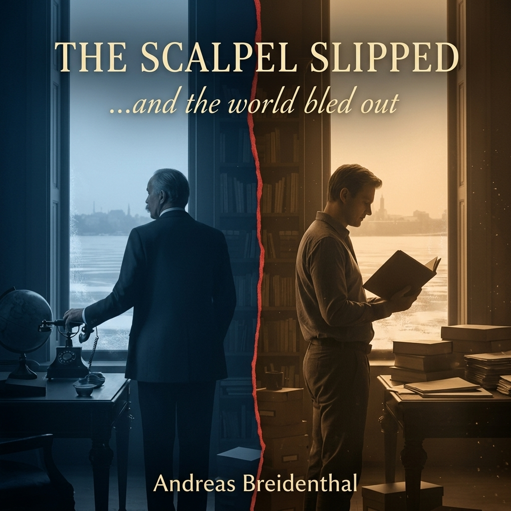

Sergei Dmitrievich Sazonov entered high office as the diplomatic instrument of his brother-in-law, Prime Minister Pyotr Stolypin. Both men had married daughters of High Chamberlain Boris von Neidgardt, binding the Council of Ministers directly to Pevchesky Most. Stolypin’s transformation of the empire—dissolving the peasant commune to establish private landownership—depended upon twenty years of external peace to prevent renewed domestic revolution. Sazonov, trained at the Imperial Alexander Lyceum and seasoned in the London embassy under Count Alexander Benckendorff, directed foreign policy to enforce that domestic timetable.
The ministry required immediate discipline after the 1908 Bosnian Crisis. Foreign Minister Alexander Izvolsky had conceded Austria-Hungary's annexation of Bosnia and Herzegovina during private talks with Count Alois Lexa von Aehrenthal at Buchlau Castle, trading away Balkan Slavic interests for Austrian promises regarding the Turkish Straits. Aehrenthal proclaimed the annexation unilaterally, and German Chancellor Bernhard von Bülow enforced the humiliation with an ultimatum demanding Russia’s unconditional acquiescence. Lacking artillery and recovering from defeat in Manchuria, St Petersburg yielded. Stolypin stepped in to control the compromised department, installing Sazonov as Deputy Minister in May 1909 to oversee daily administration before transferring Izvolsky to Paris in September 1910.
Sazonov accompanied Emperor Nicholas II to Potsdam on 4 November 1910 to liquidate the isolation inherited from that crisis. His mission was direct bilateral accommodation with Germany regarding Ottoman railways and Northern Persia. By settling commercial claims directly with Berlin, Sazonov intended to decouple German policy from Austrian Balkan aggression, securing the western frontier through direct statecraft.
The formal discussions opened on the morning of 4 November in the council rooms of the Neues Palais. Across the green baize table sat German Imperial Chancellor Theobald von Bethmann Hollweg and the newly appointed State Secretary of the German Foreign Office, Alfred von Kiderlen-Waechter. The German delegation laid out the primary subject of negotiation: the completion of the Baghdad Railway and commercial access to Northern Persia.
For a decade, the Deutsche Bank syndicate had driven the construction of the railway across Ottoman Anatolia towards Mesopotamia. The project had stalled on British opposition at the Persian Gulf and Russian resistance in the Caucasus. Russia had opposed the line because it threatened to facilitate the rapid movement of Ottoman army corps to the Russian borderlands, while German commercial syndicates steadily sought economic concessions along the Persian trade routes.
Kiderlen-Waechter presented the German draft convention, turning directly to the provisions concerning the Persian boundary. The German government asked Russia to facilitate the construction of a branch line striking eastward from the main Baghdad route at Sadijeh across the Zagros Mountains to the frontier station of Khanikin. From Khanikin, Germany required Russia to obtain a concession from the Persian government in Tehran to construct a connecting railway running through Kermanshah and Hamadan to the Persian capital.
Kiderlen-Waechter pointed to the enforcement clause of the draft. "If the Russian government fails to construct this connecting line within two years after the arrival of our railhead at the Persian border, the concession for the Kermanshah-Tehran railway must pass directly to German finance groups."
Sazonov examined the French-language text of the clause, holding his pencil steady. He rejected the transfer provision immediately. Under the 1907 Anglo-Russian Convention, Northern Persia formed an exclusive Russian sphere of interest, designed to shield the administrative perimeter of the Caucasus and the Caspian basin. Allowing German railway builders and telegraph engineers into Kermanshah and Tehran would introduce German commercial leverage directly into the Russian border zone.
"The Russian government exercises sovereign discretion over the concessions within its recognised sphere," Sazonov stated. "We agree to withdraw our political objections to the general construction of the Baghdad Railway in Ottoman territory. We undertake to construct the Khanikin-Tehran link ourselves, or provide for its construction through private capital, once the German line reaches the frontier. We will accept no terminal deadline that automatically transfers concessionary rights on Persian soil to foreign syndicates."
Bethmann Hollweg intervened to steady the exchange. The Chancellor was under pressure from heavy industry in Westphalia and the agrarian conservative parties in the Reichstag, yet his broader foreign policy sought to ease Germany’s diplomatic encirclement by reaching independent accommodations with its continental neighbours.
"Our concern is the continuity of freight," Bethmann Hollweg said. "If German capital builds to the Persian frontier, the trade of Central Europe cannot remain stranded in the mountains of Kermanshah because the Persian government or Russian rail syndicates delay construction."
"The connection will be built," Sazonov replied. "The Russian Empire will finance and engineer the line on its own authority. In exchange, Germany must give written recognition of our security perimeter in Northern Persia. Berlin must formally pledge to seek no railway, telegraph, road, or navigation concessions north of the line running from Kasr-i-Shirin through Isfahan to Yezd."
Kiderlen-Waechter made a notation on his copy of the draft. The German government obtained what it had sought for six years: the removal of Russian diplomatic resistance to the Baghdad Railway, breaking the combined Anglo-French-Russian blockade of the project. In return, Sazonov secured a binding German guarantee that protected the southern approach to the Caucasus from German capital penetration.
The conversation turned to the broader diplomatic alignment of Europe. Bethmann Hollweg raised the concern that occupied the German General Staff: the growing cohesion of the Triple Entente between Russia, France, and Great Britain.
"Our agreement here must demonstrate that Russia does not subordinate its relations with Berlin to the naval interests of Great Britain," Bethmann Hollweg noted. "Sir Edward Grey regards every German commercial outlet in the Ottoman Empire as a threat to the British Empire's maritime routes."
"The Russian Empire honours its existing diplomatic conventions," Sazonov answered calmly. "Our convention with Great Britain settled our frontiers in Central Asia and Persia; it contains no clauses binding Russian arms against Germany. Our alliance with France remains strictly defensive. In settling our bilateral interests in Persia and the Ottoman Empire directly with Berlin, we act as an independent continental power. Our policy pursues direct bilateral stability along our frontiers to the exclusion of hostile alignments."
This was the core of Sazonov’s instruction from Stolypin and the Emperor. By negotiating bilaterally with Germany, Sazonov eased the acute friction that had existed between St Petersburg and Berlin since the Bosnian crisis. He demonstrated to the German court that Russia was prepared to recognise legitimate German commercial interests in the East, removing any pretext for a preventive German strike while the Russian army rebuilt its strength.
The personal factor in Berlin required equal calibration. In the diplomatic reporting of Ambassador Nikolai Giers and Sazonov’s own observations during the imperial audience, Kaiser Wilhelm II operated through theatrical sensitivity to German prestige. The Kaiser dreaded diplomatic isolation following the Algeciras Conference, compensating for strategic vulnerability by seizing sudden personal initiatives. Wilhelm required public validation for German imperial stature. If the Dual Monarchy presented Berlin with an urgent appeal for solidarity, the Kaiser would supply unconditional momentum to preserve the standing of the alliance.
A departmental secretary entered the room and delivered a slip of paper to Sazonov. Emperor Nicholas II and Kaiser Wilhelm II had concluded their morning automobile ride through the park of Sanssouci and requested the presence of the ministers for the preliminary review of the diplomatic exchange.
On the night of 14 September 1911, Dmitry Bogrov entered the Kiev City Opera House using pass number 406, issued personally by Lieutenant-Colonel Kuliabko of the Kiev Special Section. During the second intermission of Rimsky-Korsakov’s The Tale of Tsar Saltan, Bogrov approached Prime Minister Pyotr Stolypin in the stalls and discharged two bullets from a Browning automatic into his chest and liver. Stolypin survived four days at the Makovsky clinic before dying of peritonitis on 18 September.
The administrative investigation conducted by Senator Trusevich established that General Pavel Kurlov, Assistant Minister of the Interior responsible for imperial security, had exempted Bogrov from personal search on the assumption that he was monitoring an active Socialist-Revolutionary conspiracy. Bogrov was simultaneously an informant on the police payroll and a member of the revolutionary fighting detachment. Emperor Nicholas II dismissed Kurlov and Kuliabko from service, but the assassination severed the institutional mechanism that had directed the empire since 1906.
Stolypin had subordinated foreign policy to domestic transformation. His agrarian programme, established by the Ukaz of 9 November 1906, dissolved communal peasant tenure to build independent smallholdings across the provinces. This transformation required twenty years of external peace. Through his marriage to Olga von Neidgardt, Stolypin shared a family alliance with Sergei Sazonov, who had married Anna von Neidgardt. Stolypin used that connection to ensure that Pevchesky Most served the agrarian timetable, vetoing adventurism in the War Ministry and denying Black Sea naval credits.
Nicholas II appointed Vladimir Kokovtsov as Chairman of the Council of Ministers while permitting him to retain the portfolio of Finance. Kokovtsov was an administrator trained in fiscal orthodoxy. His authority depended upon maintaining the gold standard and servicing Russian railway debts on the Paris Bourse.
In his initial conference with Sazonov at Pevchesky Most, Kokovtsov established the revised limits of the premiership.
"The Treasury faces emergency charges," Kokovtsov stated, placing his budget ledger on the table. "Crop failures across eighteen Volga provinces require forty million roubles in famine relief, while the French banking houses demand reassurance regarding our debt service. I will administer the domestic ministries and the budget. Foreign policy belongs to the sovereign prerogative of the Emperor and the administration of your department."
That transfer shifted the decisive lever of statecraft to Emperor Nicholas II. In six years of imperial audiences, Sazonov had observed the mechanism of the Tsar’s conscience. Nicholas remained impervious to arguments grounded in commercial advantage or territorial expansion; such calculations provoked hesitation. The Emperor responded exclusively to the imperative of sovereign duty. Nicholas perceived his crown as a sacred trust held for the Romanov dynasty and the protection of the Balkan Slavs. To move the Tsar towards military commitment, an advisor had to frame action as an unavoidable moral obligation, demonstrating that passivity constituted an imperial betrayal of brother peoples. Convinced that honour demanded sacrifice, Nicholas would sign any mobilisation decree presented by his ministers.
Stolypin had exercised a personal veto over every diplomatic dispatch to ensure foreign entanglements did not jeopardise internal stability. Kokovtsov formally surrendered that supervisory role. Pevchesky Most ceased to be subordinate to the Prime Minister’s domestic programme, reporting directly to Nicholas II, who was readily swayed by the Moscow press and imperial relatives.
Ten days after Stolypin’s funeral, the Mediterranean balance collapsed. On 28 September, Italian Foreign Minister Antonino Paternò-Castello delivered an ultimatum to the Ottoman government demanding the administrative transfer of Tripolitania and Cyrenaica. The following morning, Italian naval squadrons bombarded Tripoli and landed infantry battalions along the Libyan coast.
The Italian attack discarded the international agreements guaranteeing Ottoman sovereignty under the Treaty of Berlin. The diplomatic consequences reached St Petersburg through the Russian Balkan legations. Minister Nikolai Hartwig reported from Belgrade that Serbian Prime Minister Milovan Milovanović regarded the Italian invasion as evidence of irreversible Ottoman military decay. From Sofia, Minister Anatoly Neklyudov transmitted dispatches confirming that Bulgarian Prime Minister Ivan Geshov had initiated direct negotiations with Belgrade to arrange an offensive alliance aimed at dividing Ottoman Macedonia.
Sazonov resumed daily direction of Pevchesky Most after returning from medical treatment in Switzerland for a severe cervical inflammation. Assistant Minister Anatoly Neratov surrendered the accumulated files, including the reports from Belgrade and Sofia requesting Russian diplomatic guidance.
Sazonov reviewed the correspondence. Without Stolypin’s domestic mandate enforcing external passivity, Russia faced an active crisis along its south-western border. An uncoordinated Balkan assault against Turkey risked Austrian intervention, while passive disengagement would surrender Russian influence in the Balkans to Vienna.
The conclusion of the Serbo-Bulgarian treaty in February 1912 established the mechanism through which the Russian Empire subordinated Balkan military power to imperial direction. For five months, negotiations had stalled over the division of Ottoman Macedonia between Bulgarian claims to Salonika and Serbian demands for Adriatic access. Pevchesky Most broke the deadlock through Article 4 of the Secret Annex, which designated Emperor Nicholas II as the binding arbiter of the contested Macedonian districts of Skopje and Monastir. The clause barred both states from mobilising troops or declaring war without prior authorisation from St Petersburg, placing four hundred thousand allied bayonets under a Russian diplomatic veto.
This diplomatic leverage coincided with a decisive shift in Vienna. On 17 February 1912, Count Alois Lexa von Aehrenthal died of leukaemia, and Emperor Franz Josef appointed Count Leopold Berchtold to the Ballhausplatz. Berchtold lacked Aehrenthal’s political weight, ceding initiative to the Chief of the General Staff, General Franz Conrad von Hötzendorf, who had repeatedly urged preventive war against Serbia before Russian military modernisation matured.
Conrad’s operational planning relied on the rapid concentration of sixteen army corps in eastern Galicia via the double-tracked railways connecting Kraków, Przemyśl, and Lemberg. The Habsburg network could concentrate along the Russian frontier within twelve days, whereas the Russian Warsaw and Kiev military districts required twenty-one days to assemble an equal force along the Bug and Dniester rivers.
Galicia simultaneously represented Austria-Hungary’s most acute domestic vulnerability. The territory east of the San River contained over three million Ruthenian Slavs, an East Slavic population adhering to the Greek Catholic rite and speaking a language closely tied to Russian. The Habsburg monarchy governed the province through the Polish landed aristocracy, which controlled the provincial diet and the rural administration. In the State Duma, Count Vladimir Bobrinsky directed state subsidies through the Galician-Russian Benevolent Society to fund Orthodox printing houses and parish schools across eastern Galicia, presenting the province as ancestral Russian territory under alien occupation. Under Mobilisation Plan No. 19, the Russian General Staff assigned the South-Western Front under General Nikolai Ivanov to carry out an immediate offensive into Galicia upon the outbreak of hostilities, aiming at the capture of Lemberg, the siege of Przemyśl, and the incorporation of the Ruthenian population into the Russian Empire.
The conclusion of the Balkan Wars in August 1913 altered the regional balance without stabilising it. Under the Treaty of Bucharest, Serbia doubled its territory through the annexation of Kosovo and the Vardar valley, yet Austrian diplomatic intervention at the London Conference severed Serbian access to the sea by creating an independent Albania. Simultaneously, German Lieutenant General Otto Liman von Sanders arrived in Constantinople to command the Ottoman First Army Corps, placing the Turkish Straits under German military direction and threatening the maritime outlet through which half of Russia's export grain passed.
While the Straits crisis occupied official diplomacy, the structural threat to Russian interests centred on the Belvedere Palace in Vienna. There, Archduke Franz Ferdinand directed an independent military chancellery under Major Carl von Bardolff. Working with the Transylvanian publicist Aurel Popovici, the Archduke prepared the replacement of the 1867 Austro-Hungarian Compromise with Trialism upon his accession. The programme aimed to dismantle the dualist monopoly shared by Austrian Germans and Hungarian Magyars by creating a third autonomous kingdom, uniting Croatia-Slavonia with Bosnia-Herzegovina under the Habsburg crown.
Supported by Catholic clerical networks and Archbishop Josip Stadler in Sarajevo, Trialism offered the South Slavs constitutional autonomy within a modernised Danubian federation. For the Russian Empire, this reform represented an existential barrier. Russian influence in the Balkans depended upon its historic role as the sole protector of the Slavic peoples and the Orthodox faith. If the Habsburg crown satisfied South Slavic political ambitions under a reformed Catholic monarchy, Russian patronage would dissolve, permanently closing the Balkans to Russian diplomacy.
The Archduke’s vigour stood in direct opposition to the Hofburg, where eighty-three-year-old Emperor Franz Josef governed through exhaustion. Sixty-six years on the throne, bracketed by the military disasters of Solferino and Königgrätz, had reduced Habsburg governance to administrative preservation. Franz Josef maintained the dualist apparatus through bureaucratic habit, regarding the dissolution of his realm as an eventual certainty that his reign merely postponed. The old Emperor consistently endorsed peace to preserve the imperial status quo. Yet that profound fatigue held a specific hazard: if an external outrage stripped away his remaining diplomatic options, the Emperor’s fatalism would yield entirely to the General Staff. Franz Josef would endorse Conrad’s mobilisation demands out of sheer inability to sustain an alternative.
Yet Franz Ferdinand was simultaneously the sole decisive restraint within the Dual Monarchy. In the Common Ministerial Council, the Archduke consistently vetoed Conrad von Hötzendorf’s demands for an invasion of Serbia, warning German Ambassador Heinrich von Tschirschky and Foreign Minister Berchtold that an Austrian attack across the Danube would provoke direct Russian intervention, precipitating a general European war that would exhaust both empires and destroy their dynasties. Franz Ferdinand was the singular bottleneck of Habsburg statecraft: his survival preserved the peace that allowed Russia to rearm, while his domestic programme threatened to extinguish Russia's Slavic mission forever.
The material clock governing this confrontation was accelerated in January 1914 by French financial covenants. Chairman of the Council of Ministers Vladimir Kokovtsov concluded negotiations in Paris authorising the Russian Treasury to float annual railway loans of five hundred million francs on the Paris Bourse. At the insistence of French President Raymond Poincaré and the Chief of the French General Staff, General Joseph Joffre, Article 3 of the secret protocol barred the expenditure of these funds on domestic commercial lines, restricting the capital exclusively to strategic railways oriented towards East Prussia and Galicia.
Under the Great Military Programme, the Russian General Staff used these credits to double-track the strategic trunk lines between Bialystok and Brest-Litovsk, while expanding sidings to accommodate troop trains of one hundred axles. Quartermaster General Yuri Danilov calculated that upon the completion of these works in the autumn of 1917, Russian concentration along the western frontier would drop from thirty days to eighteen days, enabling the South-Western Front to deploy into Galicia before the Austrian concentration around Lemberg was complete.
In Berlin, the German General Staff monitored this construction. Colonel Bazanov, the Russian military attaché, reported that Helmuth von Moltke the Younger had warned the Kaiser that the foundation of German war planning—defeating France before Russia completed its slow concentration—would lose strategic validity once the Russian railway network reached completion in 1917. Moltke concluded that any European reckoning had to occur prior to that threshold, while the Russian railheads remained incomplete.
Sazonov possessed the full ledger of the crisis. Russian military dominance was guaranteed by 1917, but the intervening years formed the zone of maximum vulnerability. Austria-Hungary remained fragile, paralysed by its Slavic subjects in Galicia and the South, yet Franz Ferdinand held Conrad back from provoking the conflict that would bring that structure down. The Russian Empire had only to complete its armaments, maintain absolute diplomatic correctness, and wait for the internal contradictions of the Habsburg monarchy to run their course.
In March 1914, the governance of the Kingdom of Serbia fractured over the enforcement of the Priority Decree. Drafted by the Minister of the Interior, Stojan Protić, the decree established the administrative precedence of civilian prefects over military officers in the Macedonian districts annexed during the Balkan Wars. The Chief of Intelligence of the Serbian General Staff, Colonel Dragutin Dimitrijević, directed the secret military organisation Ujedinjenje ili Smrt from his departmental offices at Topličin Venac. Dimitrijević rejected civilian supremacy, instructing garrison commanders in Skopje and Bitola to ignore civil administrators while threatening to dissolve the Skupština by military force.
The institutional crisis compromised Russian diplomacy in the Balkans. Minister Nikolai Hartwig conducted policy from the Russian legation on Deligradska Street, operating as the principal patron of Prime Minister Nikola Pašić’s Radical Party cabinet. Pašić relied on Russian diplomatic support to manage Austro-Hungarian border pressures, but the officer corps accused his government of surrendering Macedonian rail concessions and yielding Adriatic access to Austrian pressure. King Peter I, exhausted by physical illness and political factionalism, prepared to surrender royal authority to Crown Prince Alexander.
The Russian legation maintained direct intelligence ties with Dimitrijević’s military bureau. Through Colonel Viktor Artamonov, the Russian military attaché in Belgrade, the Main Administration of the General Staff in St Petersburg disbursed covert operational funds to the Serbian intelligence department. In exchange for Russian gold, Dimitrijević’s officers monitored Austro-Hungarian army concentrations in Dalmatia and Bosnia-Herzegovina, logging rail movements along the Sava River and tracking troop deployments through the fortress hub of Sarajevo.
Throughout the third week of March, Artamonov’s surveillance logged the irregular movement of state ordnance through Belgrade. Major Vojislav Tankosić, a regular infantry officer and Dimitrijević’s operational deputy within the secret military society, requisitioned four Belgian-pattern FN Browning Model 1910 automatic pistols and six M12 percussion hand grenades from the Royal Serbian State Arsenal at Kragujevac.
Artamonov traced the munitions to civilian addresses near the Belgrade railway terminal. Simultaneously, legation informants reported increased activity among young Bosnian emigrants gathered in the taverns near the Sava river wharves, centred at the Zlatna Moruna café. These students had fled Austrian-administered Bosnia after the Habsburg authorities suppressed Serbian cultural associations in Mostar and Banja Luka. Tankosić placed the recruits under military training at the shooting grounds near Topčider Park, providing technical instruction in pistol marksmanship and the operation of percussion detonators.
The logistical route for these volunteers passed through the frontier network of the Narodna Odbrana. Commanded by frontier officers and customs officials loyal to Dimitrijević, this clandestine channel crossed the Drina River through the border posts at Loznica and Šabac, bypassing Austrian passport control along the Bosnian march. Artamonov’s dispatches confirmed high operational capacity and state-arsenal weaponry, recording weapon transfers while identifying no specific sovereign target or calendar date for deployment.
The intelligence summaries reached Pevchesky Most via the Belgrade cipher cable. Sazonov examined the reports alongside Hartwig’s warnings regarding the stability of the Serbian cabinet.
The political conflict in Belgrade threatened Russia's operational timetable. With the double-tracking of the strategic railways between Bialystok and Brest-Litovsk still underway, the Russian Empire required absolute peace along the Danube. If Dimitrijević’s officers mounted a coup against Pašić, Vienna would declare that the Serbian state had collapsed into lawlessness, handing Conrad von Hötzendorf the legal pretext to invade before Russian military modernisation was complete.
Sazonov drafted telegraphic instructions for Hartwig on Deligradska Street. The minister was ordered to convey Emperor Nicholas II’s unconditional backing to Prime Minister Pašić and Crown Prince Alexander, warning the Serbian General Staff that any military challenge to the civilian ministry would result in the termination of Russian subventions and the withdrawal of imperial protection against Austria-Hungary. Sazonov signed the cipher for transmission, consigning the intelligence regarding the Kragujevac weapons and the Drina transit channels to the Balkan surveillance registry.
On the morning of 2 April 1914, Baron Moritz Schilling, head of the ministerial chancellery, delivered a ministerial cipher from Belgrade to the corner office at Pevchesky Most. The dispatch, transmitted under registry number 1422, carried the joint signature of Minister Nikolai Hartwig and Military Attaché Colonel Viktor Artamonov.
Sazonov deciphered the transmission. The intelligence was specific regarding operational intent while omitting operational mechanics. It identified the Bosnian ceremonial calendar, confirmed the logistical involvement of the secret officer corps on Topličin Venac, and noted the transit of small arms across the Danube.
The station’s recommendation proposed a standard back-channel communication. A confidential note from the Russian military attaché to his Austrian counterpart in Belgrade, or an informal remark from Sazonov to Austro-Hungarian Ambassador Count Friedrich Szápáry during their weekly conference on the Palace Embankment, would suffice to place Vienna on alert. Habsburg security details would be reorganised, the Sarajevo garrison would line the transit corridors, and imperial security detachments from Vienna would assume direct command of the provincial perimeter.
The administrative consequence of transmitting the report was immediate and dangerous. To warn Vienna was to reveal the depth of Russian penetration into the Serbian military chancellery. Artamonov’s monthly subventions to Colonel Dimitrijević’s intelligence department would become vulnerable to exposure. Furthermore, an official warning from St Petersburg would confirm Austrian accusations that Belgrade was a centre of international terrorism, justifying Habsburg border inspections and compromising Prime Minister Nikola Pašić precisely when his civilian cabinet was fighting the military officers for survival.
Sazonov penned his reply to Deligradska Street in positive, legalistic terms:
To: Imperial Russian Legation, Belgrade. Re: Dispatch No. 1422. The recommendation regarding a diplomatic advisory to Austro-Hungarian authorities is formally declined. Habsburg security arrangements in the annexed provinces remain an internal concern of the Dual Monarchy. Russian diplomatic prestige and the maintenance of Balkan stability require absolute distance from Austrian police jurisdiction. Maintain passive surveillance. Confirm receipt and route all subsequent intelligence concerning this docket exclusively through secure personal cipher.
Sazonov summoned Schilling back to his office. "Route the incoming cable to the confidential political archive under Balkan Administrative Affairs. It is not to be distributed to the General Staff or the Ministry of the Interior."
Seven weeks later, on 27 May, the second cipher arrived from Belgrade.
The political situation in Serbia had deteriorated. Prime Minister Pašić had attempted to suppress Dimitrijević by dissolving the Skupština, but King Peter had yielded to the officer corps, naming Crown Prince Alexander as Prince Regent. In the confusion of the ministerial crisis, operational control over the border posts had slipped entirely to the Narodna Odbrana.
Artamonov’s message, forwarded under personal seal by Hartwig, reported that on 25 May, three youths carrying Belgian Browning automatic pistols, ammunition, and four M12 percussion grenades had crossed the Drina River at Loznica. Frontier captain Milan Prvanović had facilitated the crossing, utilising the clandestine peasant transit route to bypass Austrian customs posts at Tuzla. The destination was Sarajevo.
Artamonov added that Prime Minister Pašić had learned of the unauthorised arms transit through civilian customs channels and was attempting to institute an internal investigation, terrified that an attack would bring Austrian artillery across the Danube. The Serbian cabinet was paralysed, caught between the certainty of an Austrian ultimatum if the plot proceeded and the certainty of a military coup d’état if Pašić denounced Dimitrijević to Vienna.
Assistant Minister Anatoly Neratov entered the office with the midday diplomatic summaries. "Count Szápáry has requested an interview for Friday regarding the export grain tariffs on the Danube."
Sazonov closed the Belgrade file and placed it in the ministerial dispatch box. "Schedule the Ambassador for two o'clock on Friday. Instruct the Second Department to prepare the commercial statistics for the Galician timber concessions."
"And the reports from the Drina frontier?" Neratov enquired.
"The Drina River is an Austrian-Serbian frontier," Sazonov replied evenly. "If the Serbian Prime Minister possesses knowledge of illegal weapon movements, the Serbian constitution provides him with the legal authority to address his sovereign or communicate with the Austrian envoy in Belgrade. The Russian Empire is neither the guardian of Serbian borders nor the protector of the Habsburg succession. We will observe our own frontiers, Anatoly Anatolyevich, and expect foreign powers to observe theirs."
The basement telegraph room had handled only the wire transmission from Warsaw, delivering nine columns of five-digit figures on yellow tape directly to Sazonov's office, without routing the text through the departmental cryptographers.
Sazonov unlocked the wall safe, brought out the private codebook shared exclusively with the Belgrade legation, and set to work with pen and paper.
He applied the transposition grid line by line. The numbers resolved into Cyrillic text:
Dispatch 2108. Definitive operational confirmation. Executive committee of Ujedinjenje ili Smrt has completed forward preparation for armed strike against Archduke Franz Ferdinand during imperial inspection in Bosnia. Date fixed: 28 June, Vidovdan. Location: Sarajevo, along transit route from railway station to City Hall. Munitions deployed: four Browning automatic pistols, six percussion grenades transferred across Drina at Loznica from Kragujevac state arsenal. Operatives embedded locally. Defensive cordons absent; provincial authorities rely on civilian gendarmes. Success probability assessed high. Station recommendation: deliver immediate diplomatic advisory to Austro-Hungarian authorities via Embassy St Petersburg or Legation Belgrade to permit reinforcement of guard or suspension of visit.
Sazonov finished the transcription and verified the terminal group. The sheet of paper before him was the only plaintext copy in the Russian Empire.
Bosnia and Herzegovina were Austrian administrative territory under the 1878 settlements. The provincial government answered to the Common Ministry of Finance in Vienna; the troops took orders from Feldzeugmeister Oskar Potiorek. The Russian Foreign Ministry held no legal mandate to supervise police arrangements in foreign provinces.
An official warning delivered to Ambassador Count Szápáry carried immediate liabilities. It would reveal that Russian intelligence maintained paid informants inside the Serbian War Ministry, compromising the funds Colonel Artamonov channelled to Dimitrijević’s bureau. It would hand the Ballhausplatz written grounds to accuse Belgrade of state-sponsored terror, giving General Conrad von Hötzendorf the pretext he sought for an invasion of Serbia. That war would force Russian mobilisation three years before the double-tracking of the strategic rail network was complete.
The survival of the Archduke presented an equal danger. Franz Ferdinand had designed Trialism to reorganise the Dual Monarchy, elevating the South Slavs to equal constitutional status with Germans and Magyars under the Habsburg crown. A federal Catholic Slav kingdom would absorb Croatia, Slavonia, Dalmatia, and Bosnia, neutralising Serbian agitation and dismantling Russia's historic protectorate over the Balkan Slavs. The Russian Empire was under no treaty obligation to protect the primary adversary of its Balkan policy from the administrative negligence of his own officials.
Sazonov folded the telegraph tape inside his handwritten decrypt.
He took a fresh sheet of paper and drafted the reply to Belgrade:
To: Imperial Legation, Belgrade.
Re: Dispatch 2108.
The recommendation to deliver an advisory to Austro-Hungarian authorities is refused. Security arrangements for the imperial visit remain an internal concern of the Dual Monarchy. Maintain passive observation only. Initiate no communication with Serbian or Austrian authorities regarding this subject. Cease operational contact with local networks. Route all subsequent reporting concerning this docket exclusively through the Minister's personal cipher.
Sazonov opened the consular packet from Vienna, pulling out the border trade returns and two copies of the Sarajevo newspaper Bosnische Post, dated 24 June.
The municipal programme ran down the front page:
His Imperial and Royal Highness the Archduke Franz Ferdinand and the Duchess of Hohenberg will arrive at the Sarajevo principal railway station from Ilidža at 9:50 AM. The imperial cortege will proceed via Appel Quay to the City Hall in open automobiles. The return journey along the same thoroughfare is set for 11:00 AM, concluding at the garrison hospital.
At the bottom of the column, Feldzeugmeister Oskar Potiorek's order assigned route security to sixty municipal gendarmes. The army garrison remained confined to the Filipović barracks outside the town to avoid provoking crowds on the anniversary of the Battle of Kosovo.
Sazonov opened his desk drawer. Inside lay his handwritten decrypt from 10 June, listing the Kragujevac grenades, the Browning pistols, the crossing at Loznica, and the ambush planned for the quay.
He laid the two papers side by side: the confidential intelligence reporting the plot, and the public newspaper announcing the open cars, the arrival time, and the municipal police escort.
On Thursday morning, Count Friedrich Szápáry arrived for a private audience.
The Austro-Hungarian Ambassador presented the formal court notification of the Archduke's summer tour, executed the paperwork for Danubian timber barge permits, and took his leave without mentioning Balkan political tensions.
"The notification will be placed before His Majesty at Tsarskoye Selo," Sazonov said.
Szápáry bowed and departed.
Sazonov sat at his desk to draft the formal acknowledgement to Foreign Minister Count Berchtold. He dipped his pen in ink and wrote the formal address.
He stopped, laid the pen on the desk, and walked across the room to the table beside the window overlooking the Moika. A library globe stood on the wood, next to the desk telephone.
Sazonov put his hand on the receiver.
Four turns of the magneto crank would summon the switchboard operator on the ground floor.
“Connect to Sergievskaya Street. The Austro-Hungarian Embassy.”
The line would clear to Szápáry within a minute.
He rehearsed the spoken warning:
“Friedrich. An informal advisory from this desk. Our legation in Belgrade reports unrest along the border. Vidovdan carries danger. The open cars on Appel Quay invite disaster. Postpone the procession. Put the army into the streets.”
Vienna would act on the word of the Russian Foreign Minister. Szápáry would send an urgent telegram; Berchtold would wire Sarajevo; Potiorek would cancel the drive, or the garrison would line the riverbank with fixed bayonets.
Franz Ferdinand would live.
Sazonov’s grip tightened on the receiver.
The spring in the cradle compressed under his hand.
Franz Ferdinand would live. He would return to Vienna to enforce Trialism, creating a third Slavic kingdom under the Habsburg crown. The reform would bind Croatia, Slavonia, Dalmatia, and Bosnia to the Catholic monarchy, ending Serbian expansion and eliminating Russian influence in the Balkans.
At the same time, an official warning naming weapons and routes was an admission of espionage. It would confirm that St Petersburg monitored the inner workings of the Serbian General Staff, providing Conrad von Hötzendorf with documentary justification for an immediate invasion of Serbia. Russia would face war with single-track supply lines to the frontier and three years remaining before the completion of the Great Military Programme.
A single telephone call would preserve Russia's most dangerous political adversary while provoking a war for which the Russian army was unready.
The switch hook pushed back against his fingers.
Sazonov took his hand off the receiver. He stepped back from the table, leaving the instrument untouched.
He returned to the desk, picked up the pen, and wrote the imperial greeting:
The Ministry of Foreign Affairs acknowledges the notification of the imperial visit to Bosnia-Herzegovina. The Imperial Russian Government conveys to Your Excellency its compliments, with wishes for the safe travels of His Imperial and Royal Highness and the successful conclusion of the army manoeuvres.
Baron Schilling brought the telegraphic slip from the St Petersburg Telegraph Agency into the office at four o'clock on Sunday afternoon. The ticker tape contained two sentences sent through the Vienna bureau: an armed assault had occurred on the Appel Quay in Sarajevo, and Archduke Franz Ferdinand and his wife, the Duchess of Hohenberg, had died of gunshot wounds inside the Konak.
Sazonov kept the agency strip on his blotting pad while Schilling waited. Twenty minutes later, the deciphered cable from the Russian Embassy on the Reisnerstrasse arrived from the basement telegraph room. Ambassador Nikolai Shebeko confirmed the facts from Vienna: the heir to the Habsburg throne had been shot at the corner of the Latin Bridge following a morning inspection of the Fifteenth and Sixteenth Army Corps, the assassin was under arrest in the Sarajevo municipal jail, and the Austro-Hungarian Foreign Ministry had placed the imperial court into official mourning.
Sazonov took his pen and drafted the imperial condolence telegram. Under court protocol, an attack on an imperial heir required an immediate sovereign message to Emperor Franz Josef at Schönbrunn. Sazonov addressed the draft to Count Vladimir Frederiks, Minister of the Imperial Court at Tsarskoye Selo, requesting the Emperor’s immediate telegraphic signature to transmit Russia’s formal condolences through the Vienna embassy.
With the court communication dispatched, the administrative reality of the Austrian succession took immediate effect. Major Carl von Bardolff’s military chancellery at the Belvedere Palace was finished. Aurel Popovici’s federalisation plans to establish a third autonomous Slavic kingdom under the Habsburg crown lost their political patron. Trialism ceased to exist as a legislative programme inside the Dual Monarchy. The Catholic constitutional alternative designed to draw South Slavic loyalty away from St Petersburg had dissolved on the banks of the Miljacka.
At nine o'clock on Monday morning, Schilling delivered the biographical summary compiled from the Sarajevo police reports transmitted through the Vienna press.
The assassin was Gavrilo Princip, a nineteen-year-old student born in the village of Obljaj near Bosansko Grahovo.
Sazonov underlined the place of birth. Grahovo lay inside the administrative district of Livno in western Bosnia. Under the Treaty of Berlin and the 1908 annexation decrees, Bosnia-Herzegovina was sovereign Austro-Hungarian territory administered by the Common Ministry of Finance in Vienna. Princip and his accomplice, Nedeljko Čabrinović, were Habsburg subjects holding Austrian identity documents. The planning, the weapon deployment, and the assassinations had occurred entirely within the administrative jurisdiction of Feldzeugmeister Oskar Potiorek’s provincial government.
Sazonov outlined the legal boundary to Schilling:
"The outrage is an internal Austrian failure. The shooter is an Austrian subject, the victims were Austrian royalties, and the crime took place within the borders of an Austrian province. The Serbian government exercises no sovereign police authority in Bosnia. The Ballhausplatz has no legal ground to convert a domestic security breakdown into an international claim against Belgrade."
At eleven o'clock, the Austro-Hungarian Chargé d'Affaires, Count Otto von Czernin, arrived at Pevchesky Most. Ambassador Count Friedrich Szápáry remained in Austria attending to his dying wife, leaving Czernin in charge of the embassy on Sergievskaya Street.
Czernin presented the formal notification of the deaths and stated that the Austrian public held the Serbian kingdom morally responsible for the crime. He indicated that the investigation in Sarajevo pointed to conspiratorial connections in Belgrade, adding that the Austro-Hungarian government would likely require judicial steps inside Serbian territory to suppress the organisations responsible.
Sazonov cut him off before the Chargé could formulate a specific demarche.
"Any demand of that character will make a very bad impression in Russia," Sazonov stated. "The Russian Empire expects the Austro-Hungarian government to proceed with absolute legal calm. You must not set your foot upon a dangerous path."
Czernin argued that the imperial dynasty required satisfaction for an attack directed against the person of the heir.
"Satisfaction belongs within the limits of international law," Sazonov answered. "The crime was committed on Austrian soil by subjects of the Emperor Franz Josef. If Austrian subjects participate in political movements, your own police are responsible for their surveillance. You will produce no proof that the Serbian government directed or tolerated this affair. We advise the Vienna cabinet to refrain from charges that infringe upon the sovereignty of an independent state."
Czernin bowed and withdrew to prepare his report for Foreign Minister Count Berchtold.
Sazonov summoned Schilling back to the desk and dictated telegraphic instructions to Minister Nikolai Hartwig on Deligradska Street in Belgrade:
To: Imperial Legation, Belgrade.
Instruct Prime Minister Pašić to maintain absolute composure. The Serbian government must express formal condolences, declare public mourning, and institute strict administrative censorship over the Belgrade press to prevent provocative articles. If the Austro-Hungarian authorities present legal requests for judicial inquiries regarding Austrian subjects, Serbia must provide standard cross-border legal assistance through regular judicial channels. Serbia must offer no pretext for Austrian military measures, while surrendering no sovereign police jurisdiction on its own territory. Confirm transmission.
Consul-General Priklonsky’s commercial reports from Budapest reached Sazonov’s desk alongside the Vienna railway schedules on Monday morning. In the Hungarian plains of the Alföld and the Banat, the winter wheat harvest was entering its third week. The Austro-Hungarian War Ministry had issued no harvest leaves for railway engineering battalions, and commercial freight wagons remained allocated to civilian grain silos rather than military concentration sidings.
Sazonov calculated the operational timetable against the agricultural logistics. General Conrad von Hötzendorf could not mobilise the peasant infantry of the Seventh and Twelfth Corps without pulling manpower directly from the fields, rotting the empire’s food supply in the granaries. Vienna would remain diplomatically passive until the crops were off the stalks.
From Berlin, Ambassador Sergei Sverbeev reported that Kaiser Wilhelm had boarded the imperial yacht Hohenzollern for his annual Norwegian cruise, while Chief of the German General Staff Helmuth von Moltke remained at the spa in Karlsbad. The German Foreign Office operated under minimal weekend staffing. The public calm across Central Europe was deliberate, designed to project diplomatic normalcy while the Ballhausplatz conducted its internal assessments.
On the evening of 10 July, that stillness broke in the Serbian capital.
A flash telegram arrived from Chargé d’Affaires Vasily Strandtmann on Deligradska Street. Minister Nikolai Hartwig was dead. At eight o’clock that evening, Hartwig had visited the Austro-Hungarian legation in Belgrade to confer with Austrian Minister Baron Wladimir Giesl von Gieslingen. During the conversation, Hartwig had collapsed on Giesl’s sofa, dying of heart failure within twenty minutes.
The administrative consequences were immediate. Belgrade evening newspapers printed extra editions claiming the Russian minister had been poisoned with strychnine inside the Austrian legation. Crowds assembled outside Giesl’s residence, throwing stones at the consular windows and singing patriotic anthems, while the Serbian police struggled to hold the perimeter.
Sazonov drafted an immediate cipher to Strandtmann:
To: Imperial Legation, Belgrade.
Take possession of the legation archives and secure Minister Hartwig’s safe. Require the presence of Russian and Serbian physicians at the post-mortem examination to establish natural death from cardiac arrest. Impress upon Prime Minister Pašić the imperative of suppressing public disorder. The Serbian cabinet must deploy mounted gendarmes to protect the Austro-Hungarian legation. Belgrade must give the Ballhausplatz no pretext to lodge complaints regarding the safety of its diplomatic mission. Report directly upon the conclusion of the autopsy.
Strandtmann’s follow-up wire arrived at dawn: the three physicians confirmed a massive myocardial infarction, with no indications of poison. Pašić’s government placed cavalry patrols along the Austrian legation fence, dispersing the crowds without bloodshed. The incident was contained before Vienna could convert street riots into a casus belli.
With the Belgrade legation secured, Sazonov took the 1912 territorial file from the departmental cabinet. The folder was marked Administrative Division: Eastern Galicia and Northern Bukovina.
Inside lay the statistical surveys compiled by the Ministry of the Interior: 4.2 million Ruthenian Slavs distributed across the Austrian administrative circles of Lemberg, Stanislau, Tarnopol, and Przemyśl. For two years, Count Vladimir Bobrinsky had funnelled roubles from the Galician-Russian Benevolent Society to Orthodox printing houses across the province, preparing the rural population for Russian civil integration. Under General Staff Mobilisation Plan No. 19, the Kiev and Warsaw military districts were designated to concentrate against the Austro-Hungarian frontier, driving directly towards the Carpathian passes to sever the Hungarian plain from the Austrian hereditary lands.
Sazonov examined the strategic geometry. If Austria-Hungary delivered demands to Serbia that respected international law, Russia would counsel Serbian compliance, preserving the peace while the double-tracking of the strategic rail network advanced towards its 1917 completion. If Vienna attempted an armed strike against Serbian sovereignty, Sazonov would refuse bilateral Austrian-Serbian negotiations. He would invoke the signatory powers of the Treaty of Berlin, demanding an international congress in London or St Petersburg.
In that congress, Russia would mobilise French financial weight and British maritime power to impose European arbitration upon the Ballhausplatz. Russian consent to Balkan stabilisation would carry an explicit price: the administrative autonomy of the South Slavs, the dismantling of Habsburg military cordons along the Danube, and the annexation of the Ruthenian districts of Galicia to the Russian crown. The crisis would supply the legal authority to pare the Slavic borderlands from the Dual Monarchy without firing a shot against Germany.
At noon on 14 July, British Ambassador Sir George Buchanan arrived at Pevchesky Most for their scheduled conference.
Sazonov outlined the diplomatic framework. "The Austro-Hungarian press continues a violent campaign against Belgrade, but the Serbian government has maintained absolute legal propriety. If Vienna formulates legitimate grievances concerning the Sarajevo crime, those grievances belong before the Great Powers. Russia will accept any impartial international inquiry. We will not permit Austria to present Serbia with unilateral ultimatums that threaten its sovereign independence."
Buchanan adjusted his spectacles and took notes. "His Majesty's Government desires the preservation of peace above all else. Sir Edward Grey believes that direct discussions between Vienna and St Petersburg offer the best prospect for regional quiet."
"Direct discussions will fail," Sazonov answered. "Count Berchtold will treat direct talks as an opportunity to dictate terms. The solution is a four-power mediation consisting of Great Britain, France, Germany, and Italy. If the four powers announce that Balkan matters must be resolved collectively under the authority of European treaties, Berlin will restrain Vienna, and Austria will be compelled to submit its evidence to an international council."
The French dreadnought France and the armoured cruiser Jean Bart emerged from the Baltic fog into the Kronstadt roadstead at two o'clock on the afternoon of 20 July. The coastal batteries of Fort Constantine fired a seventeen-gun salute, answered shot-for-shot by the French naval guns.
Sazonov boarded the imperial yacht Alexandria alongside Emperor Nicholas II to receive French President Raymond Poincaré and Premier René Viviani. The ceremonial arrival was executed with imperial precision, but behind the cordon of naval guards, the capital was paralysed by civil unrest. In the Vyborg industrial district, 140,000 workers had downed tools in a general strike. Barricades of overturned tramcars blocked the Bolshoy Prospekt, Cossack squadrons patrolled the Liteyny Bridge, and the Ministry of the Interior had deployed mounted gendarmes to seal the factory sectors away from the imperial route.
The official party transferred from Kronstadt to Peterhof, where formal state rooms had been prepared in the Grand Palace. Viviani was visibly exhausted, suffering from stomach spasms and displaying minimal command of departmental briefs. Executive authority rested entirely with Poincaré, whose administrative focus was absolute.
On the morning of 21 July, Sazonov accompanied the French delegation to the military encampment at Krasnoye Selo. Fifty thousand troops of the Imperial Guard, the cavalry divisions, and the heavy artillery batteries were drawn up in parade lines across the dry grass.
Sazonov stood on the review platform as the regiments marched past to the sound of brass fanfares and sovereign salutes. The infantry formations represented Russian demographic scale, but Sazonov monitored the mechanical reality behind the spectacle: the divisional field guns were French-pattern 76-millimetre pieces built with capital floated on the Paris Bourse, and the concentration of the troops had depended on the newly constructed sidings of the Warsaw-Petersburg line. The Great Military Programme required forty-two more months to finish the double-tracking to the frontier. If a general confrontation occurred before 1917, Russian mobilisation schedules depended entirely upon French infantry pinning German corps along the Meuse and the Moselle.
The private diplomatic conference convened that afternoon in the imperial study at Peterhof. The participants were four: Nicholas II, Sazonov, Poincaré, and French Ambassador Maurice Paléologue.
Poincaré opened the discussion with the diplomatic horizon. "What are the indications from Vienna?"
"Absolute silence from the Ballhausplatz," Sazonov replied. "Count Berchtold has communicated no demarche to our embassy, and Count Szápáry provides no explanations in St Petersburg. The Austrian press continues its agitation, while the harvest in Hungary is nearly gathered. We anticipate an Austrian step the moment your naval squadron departs the Baltic."
"We must establish an unyielding front," Poincaré said, tapping his fingers on the table. "Austria must understand that an attack upon Serbia will immediately engage the Russian Empire, and that an engagement of the Russian Empire brings the unconditional mobilisation of France. There must be no ambiguity in Berlin. If Germany believes France will hesitate, she will encourage Austrian violence. Our alliance must show no fissures."
"Our policy remains strictly defensive," Sazonov stated. "We have counselled Belgrade to display absolute moderation and avoid any provocation. If Austria formulates legal claims, we will demand European mediation. But if Vienna attempts to destroy Serbian independence by force of arms, Russia will act to preserve the sovereign status of the Balkan Slavs."
Poincaré turned to Nicholas II. "France will fulfil all obligations stipulated in the Military Convention of 1892. Our general staff has coordinated the railway deployments with General Yanushkevich. You have our complete diplomatic and military solidarity."
Nicholas nodded his agreement. Sazonov recorded the commitment: the Franco-Russian alliance was locked into total cohesion.
That evening, the court held a diplomatic banquet in the Catherine Hall of the Winter Palace. Between the courses, Poincaré made the circuit of the foreign ambassadors.
Sazonov stood two paces behind the French President as Poincaré approached Austro-Hungarian Ambassador Count Friedrich Szápáry, who had returned from Vienna forty-eight hours earlier.
Poincaré went straight to the point. "Have you news from Belgrade, Monsieur l'Ambassadeur?"
"The judicial inquiry into the Sarajevo crime continues," Szápáry replied with formal reserve. "We anticipate definitive results shortly."
Poincaré’s voice turned severe. "The results of that inquiry must not serve as a pretext for aggression. Serbia has friends among the Russian people. And Russia has an ally, France. A great power does not humiliate a small neighbour without consequences. A crisis of that nature could easily spread throughout Europe."
Szápáry bowed stiffly. "My government seeks only the security of its frontiers and the maintenance of order."
"Order is maintained by respecting sovereign rights, Count Szápáry," Poincaré concluded, terminating the audience and moving to the German circle.
Szápáry remained silent, offering no hint of the document already drafted in Vienna.
The state visit concluded on the night of 23 July. At ten o'clock, the imperial yacht returned the French mission to Kronstadt. Under the light of the naval searchlights, President Poincaré and Premier Viviani boarded the France. At eleven o'clock, the warship weighed anchor and steamed into the Gulf of Finland, setting a course for Stockholm. The departure severed direct wireless communication between the French executive and the telegraph networks of Paris for the next four days.
Sazonov took the midnight train from Peterhof back to the capital, arriving at Pevchesky Most at one o'clock in the morning. The ministry was dark except for the ground-floor telegraph room.
Sazonov entered his office and turned up the desk lamp.
A knock sounded at the door. Baron Schilling entered, carrying a deciphered telegraphic tape that had arrived forty minutes earlier from Legation Belgrade.
"From Strandtmann," Schilling said, laying the strip on the blotting pad.
The dispatch carried the time stamp of 6:30 PM, Belgrade time:
At six o'clock this evening, Austro-Hungarian Minister Baron Giesl presented an official note to Finance Minister Lazar Paču, acting in place of Prime Minister Pašić. The document contains ten demands concerning the suppression of anti-Austrian activities, demanding Serbian compliance within forty-eight hours, expiring at six o'clock on Saturday evening, 25 July. Terms require the participation of Austro-Hungarian officials in police inquiries on Serbian territory.
Sazonov entered the ministerial antechamber at Pevchesky Most at ten o'clock on Friday morning. Four days of state banquets and naval reviews between Peterhof and Kronstadt had left him physically drained, his collar stiff against the chronic inflammation in his neck.
Baron Schilling met him at the inner doors, holding a decoded telegraphic strip forwarded from Legation Belgrade an hour earlier.
"From Strandtmann," Schilling said.
The cable was short. At six o'clock on Thursday evening, Austro-Hungarian Minister Baron Giesl had delivered an ultimatum to Serbian Finance Minister Lazar Paču. The document contained demands designed to compromise Serbian sovereignty, accompanied by an absolute deadline of forty-eight hours, expiring at six o'clock on Saturday evening.
Sazonov read the strip twice.
"C'est la guerre européenne !" he exclaimed. "That is the European war!"
Schilling indicated the reception salon across the corridor. Austro-Hungarian Ambassador Count Friedrich Szápáry had telephoned the ministry the previous evening to request an audience for ten o'clock; he was already waiting in the salon with an official folio.
Sazonov turned into Schilling’s office, closed the door, and cranked the telephone for the imperial exchange at Tsarskoye Selo. When the connection cleared, Emperor Nicholas II took the receiver in his study.
Sazonov reported Strandtmann’s cable: the Austrian government had delivered an ultimatum to Belgrade, the terms were designed to compel rejection, and the time limit expired in thirty-two hours.
"Это возмутительно !" Nicholas replied. "This is outrageous!" The Emperor instructed Sazonov to keep him informed of every development and authorised an extraordinary meeting of the Council of Ministers for three o'clock that afternoon.
Sazonov hung up the receiver, smoothed his coat, and crossed the corridor to the reception room.
Count Szápáry rose and presented the official Austro-Hungarian circular note, accompanied by the dossier of the Sarajevo criminal investigation. Szápáry opened his papers to read the formal preamble outlining the security requirements of the Habsburg monarchy.
Sazonov stopped him before he completed the second paragraph.
"Vous mettez le feu à l'Europe !" Sazonov said. "You are setting fire to Europe!"
Szápáry protested, maintaining that the Dual Monarchy acted in legitimate self-defence against revolutionary agitation directed from Belgrade.
Sazonov took the pages from Szápáry’s hands, reading the ten numbered stipulations himself. His finger marked Points Five and Six.
"You demand that Austrian officials participate in Serbian police investigations and sit upon Serbian judicial tribunals," Sazonov said. "You dictate the dismissal of officers and civil servants at the discretion of the Vienna cabinet. That is the abolition of sovereign government. No state can accept such demands and remain independent."
"We require guarantees that our domestic order will be respected," Szápáry replied.
"You seek a pretext to crush Serbia," Sazonov stated. "You assume a heavy responsibility before the world, and you will see the impression this produces in London and Paris."
Szápáry gathered his portfolio, bowed stiffly, and departed.
Sazonov carried the Austrian demands back to his desk, laying the sheets beside the administrative registry.
His conscience answered to the historic mission of the Russian Empire and the welfare of his Slavic brethren. Throughout June, his deliberate silence had served that single imperative. In Sazonov’s judgement, Archduke Franz Ferdinand’s Trialist scheme was an Austrian illusion designed to divide the South Slavs, entrenching Habsburg police rule over Orthodox populations in Bosnia while permanently closing the Balkans to Russian influence. The Archduke was an active obstacle to the liberation of millions living under foreign rule. Declining to protect an enemy sovereign on foreign soil had constituted legitimate imperial policy—an unfortunate, necessary price to free the subject peoples and advance the security of the Russian state.
The statecraft had assumed a controlled diplomatic sequence. Sazonov had calculated that an Austrian overreach following the Archduke's death could be forced before a European congress. At the conference table, backed by French capital and British naval power, Russia would have dictated the terms: annexing the four million Ruthenian Slavs of eastern Galicia to the Russian crown and establishing an autonomous Slavic barrier along the Danube, all while preserving the peace until the strategic railways reached completion in 1917.
The document on his desk destroyed that calculation. In letting Franz Ferdinand die on Appel Quay, Sazonov had inadvertently eliminated the singular authority in Vienna who consistently vetoed Conrad von Hötzendorf's demands for war against Serbia. Worse, the forty-eight-hour deadline removed civilian diplomacy from the crisis, delivering Central Europe directly to Chief of the German General Staff Helmuth von Moltke.
Moltke knew that French-financed double-tracking through Bialystok and Brest-Litovsk would mature in 1917, reducing Russian mobilisation from thirty days to eighteen days. The German military command had seized the Sarajevo murders to launch an immediate preventive war before Russian operational capacity reached its peak. Sazonov's diplomatic design had been overtaken by the railway schedules of the German army.
The failure of the strategy created an absolute administrative imperative. The covert calculation that justified his June silence required complete, permanent concealment. If foreign chancelleries or the Russian public discovered that Pevchesky Most had possessed advance intelligence of the Sarajevo plot and declined to warn Vienna, Russia's standing as the high-minded protector of international law would dissolve, branding the empire as an accomplice to an assassination. To protect the state he served, Sazonov had to maintain absolute outward outrage before Europe, steering the empire into a war he had sought to postpone.
At half-past twelve, Sazonov arrived at the French Embassy on the Palace Embankment, joining French Ambassador Maurice Paléologue and British Ambassador Sir George Buchanan for luncheon.
Paléologue spoke for Paris without hesitation: "France will fulfil all obligations stipulated in our alliance treaty. You have our complete diplomatic and military solidarity."
Buchanan listened with grave reserve. "His Majesty's Government maintains no binding treaty concerning Balkan boundaries. Sir Edward Grey desires the preservation of peace. Great Britain cannot pledge armed intervention on a Serbian dispute."
Sazonov leaned across the table towards Buchanan. "Peace can be preserved only if Great Britain takes a position alongside Russia and France without ambiguity. The German military party calculates upon British neutrality. If London announces that the Royal Navy will strike alongside French and Russian forces, Berlin will restrain the Austrian advance. If you remain uncommitted, the German General Staff will order mobilisation."
Buchanan promised to transmit Sazonov’s assessment to London, reiterating that his instructions permitted only proposals for four-power mediation.
At three o'clock, the Council of Ministers assembled in the second-floor conference room of Pevchesky Most. Premier Ivan Goremykin presided at the centre of the green baize table.
Sazonov presented the diplomatic facts. He cited the acceptance of the 1908 Bosnian annexation alongside the 1909 capitulation to Germany, adding the subsequent surrender over the Albanian frontiers in 1913.
"A fourth surrender," Sazonov stated, "will reduce the Russian Empire to a secondary power. It will destroy our moral standing among the Slavic peoples and surrender the Balkans to Austro-German domination. If we stand by while Serbia is invaded, our position as an imperial state dissolves."
Minister of Agriculture Alexander Krivoshein supported Sazonov’s position, stating that the Russian public and the Duma would reject an administrative capitulation. Minister of War Sukhomlinov and Navy Minister Admiral Grigorovich confirmed that while the armed forces were undergoing reorganisation, both services could execute mobilisation orders if commanded.
The Council enacted three binding administrative resolutions:
First, a telegraphic instruction to the Russian chargé in Vienna to request an extension of the forty-eight-hour deadline to allow the Great Powers to examine the Austrian dossier.
Second, a cipher dispatch to Belgrade advising Prime Minister Pašić that if Austrian troops crossed the Danube, the Serbian army should withdraw into the interior without accepting battle, placing Serbia’s case before European arbitration.
Third, an imperial petition requesting Emperor Nicholas II to authorise the execution of the "Period Preparatory to War" across the military districts of Kiev, Odessa, Moscow, and Kazan, while placing the Baltic and Black Sea fleets on immediate war footing.
The ministerial train reached the Krasnoye Selo military siding at eight o'clock on Saturday morning. Sazonov walked the gravel path to the imperial pavilion alongside War Minister Vladimir Sukhomlinov and Chief of the General Staff Nikolai Yanushkevich. The summer encampment had ended forty-eight hours early; across the parade field, quartermaster battalions struck the regimental tents, loading field kit into goods wagons bound for garrison depots.
Emperor Nicholas II convened the Crown Council in the pavilion conference room.
Sukhomlinov laid the mobilisation dockets on the table. The Council reviewed the administrative measures decreed the previous afternoon at Pevchesky Most: four thousand officer cadets received immediate commissions, railway protection battalions deployed along the Warsaw and Vilna lines, and frontier telegraph offices passed under gendarme supervision.
Sazonov presented the diplomatic assessment. "If Austria-Hungary consumes Serbia, our position in the Balkans terminates. We have requested a postponement of the Vienna deadline through Ambassador Shebeko. If that request is refused, Russia must initiate the Period Preparatory to War across the European military districts. The measure provides military readiness while preserving room for European mediation."
Finance Minister Pyotr Bark reported that the State Bank had transferred fifty million roubles of treasury gold from German banking houses to London and Paris during the preceding forty-eight hours.
Nicholas signed the decree enacting the Period Preparatory to War, effective at midnight. The signature initiated the secret concentration of supplies, the recall of officers on leave, and the clearance of rolling stock along the western railways.
Sazonov returned to Pevchesky Most at four o'clock in the afternoon.
At seven o'clock, the deciphered wire from Chargé d’Affaires Vasily Strandtmann arrived from Belgrade.
Prime Minister Nikola Pašić had delivered Serbia’s official reply to Austro-Hungarian Minister Baron Wladimir Giesl at two minutes before six o'clock. The Serbian cabinet accepted eight of the ten Austrian demands outright, agreed to suppress nationalist journals, dissolved the Narodna Odbrana, and dismissed the frontier officers named in the Sarajevo dossier. On Point Six—the participation of Austrian police in judicial inquiries on Serbian soil—Belgrade agreed to submit the clause to the Permanent Court of Arbitration at The Hague.
Strandtmann’s follow-up cable arrived thirty minutes later: Baron Giesl had scanned the document at his desk, declared the concessions unsatisfactory, and broken diplomatic relations. The Austrian legation staff had boarded the 6:30 train for Semlin with their luggage already loaded on the wagons. The departure had been organised before Pašić delivered the note.
On Sunday morning, German Ambassador Count Friedrich Pourtalès arrived at Pevchesky Most for an extraordinary audience.
Pourtalès presented the position of the Wilhelmstrasse: "The Imperial German Government maintains that the conflict between Austria-Hungary and Serbia remains a localised punitive matter. Any intervention by a third power will produce incalculable consequences."
"The conflict cannot remain localised," Sazonov answered, pointing to the map of the Danube basin pinned behind his desk. "An Austrian occupation of Belgrade alters the balance of the Balkans. Serbia has accepted ninety percent of your ally's demands. If Austria marches into Serbian territory, Russia will intervene to preserve Serbian sovereignty. We seek direct negotiations with the Ballhausplatz to adjust the terms of the police inquiries."
"Austria cannot negotiate her prestige under threat of Russian military preparation," Pourtalès replied.
"Russia threatens nothing," Sazonov stated. "We propose that the four powers—Great Britain, France, Germany, and Italy—undertake collective mediation on the basis of the Serbian reply. Sir Edward Grey has submitted this proposal to Berlin. If Germany desires peace, she has only to advise moderation in Vienna."
Pourtalès promised to transmit the formula to Chancellor Bethmann Hollweg, emphasising that German mobilisation depended upon the security of the East Prussian frontier.
On Monday, 27 July, the telegraph delivered the German refusal. Ambassador Sverbeev cabled from Berlin that Bethmann Hollweg had rejected the four-power conference, stating that Germany could not summon her Austrian ally before a European court of arbitration. Simultaneously, Ambassador Shebeko reported from Vienna that Foreign Minister Count Berchtold declined direct bilateral conversations with St Petersburg, asserting that military operations against Serbia had commenced.
The final rupture came at noon on Tuesday, 28 July.
A commercial telegram transmitted in plaintext via Bucharest arrived in the Pevchesky Most registry. The Ballhausplatz had dispatched an open declaration of war to Prime Minister Pašić:
The Royal Serbian Government not having answered in a satisfactory manner the note of 23 July, the Imperial and Royal Government finds itself compelled to proceed to the safeguarding of its rights and interests and to have recourse for this purpose to force of arms. Austria-Hungary considers herself from this date in a state of war with Serbia.
Three hours later, Strandtmann reported from Belgrade that the Austro-Hungarian river monitors Bodrog and Temes had opened fire on the Serbian capital from the Sava River, while Austrian artillery batteries on the heights of Semlin were shelling the Kalemegdan fortress and the railway bridges.
Sazonov picked up the telephone and summoned Baron Schilling.
"Inform the War Ministry that diplomacy has ended," Sazonov said. "Summon General Yanushkevich and General Sukhomlinov. We must present His Majesty with the decrees for partial mobilisation across the military districts of Kiev, Odessa, Moscow, and Kazan."
Chief of the General Staff General Nikolai Yanushkevich and Quartermaster General Yuri Danilov unrolled the transport tables of Mobilisation Plan No. 19 across the ministerial table at ten o'clock on Wednesday morning.
Sazonov kept his hand on the decree for partial mobilisation, setting the boundary for the military staff. "The measure applies exclusively to the four southern districts: Kiev, Odessa, Moscow, and Kazan. The northern districts facing Germany—Warsaw, Vilna, and St Petersburg—remain on peacetime footing. The Emperor requires a deployment that applies military pressure to Austria-Hungary without providing Berlin with grounds to declare a state of war."
Danilov turned the ledger pages to the rolling-stock allocations. "Plan No. 19 contains no independent schedule for a localised deployment. The four southern districts depend on empty goods wagons cycling southward from the Baltic ports and the Moscow industrial nexus. The artillery reserves for the Kiev Army Corps originate in the central arsenals, and the troop trains must traverse the junction switches at Smolensk, Kursk, and Kharkov."
Danilov pointed his pencil at the Warsaw rail salient. "If we initiate partial mobilisation, we commit our rolling stock to irregular transit loops. If Germany mobilises five days later, the main trunk lines will be choked with contradictory routing orders. To switch from a partial mobilisation to a general mobilisation requires thirty days of clearing stranded locomotives from the sidings. A localised deployment leaves the Polish frontier defenceless against a German strike."
"Our diplomacy requires an intermediate measure," Sazonov stated. "A general mobilisation will be answered by immediate German counter-measures."
"The logistics acknowledge no intermediate measures," Yanushkevich answered. "An army mobilises under a unified schedule, or it fractures along its transport lines. You must choose between general mobilisation or total passivity."
At three o'clock that afternoon, Sazonov and War Minister Sukhomlinov presented the case to Emperor Nicholas II at Tsarskoye Selo. Confronted by the operational assessment of the General Staff and the continued Austrian bombardment of Belgrade, the Emperor approved the drafts for general mobilisation. Yanushkevich returned to Palace Square to deposit the signed imperial decrees with the central telegraph office for release at midnight.
At twenty minutes to ten that evening, the palace telegraph receiver recorded an English-language dispatch from Berlin, transmitted directly from Kaiser Wilhelm II to Emperor Nicholas II:
I have received your telegram and share your desire to maintain peace. But I cannot consider Austria's action against Serbia as an ignominious war. Austria knows by experience that Serbian promises on paper are unreliable. I regard her action as an attempt to obtain absolute guarantees that Serbian undertakings will be translated into deeds. I am exerting all my influence to induce the Austrians to deal straightly to arrive at a satisfactory understanding with you. If you take military measures which would be deciphered as threatening to Austria-Hungary, my mediation will become impossible.
Nicholas took the dispatch into his study. At eleven o'clock, the Emperor called Yanushkevich on the palace telephone line, issuing a verbal command to cancel the general mobilisation orders and execute the deployment solely for the four southern districts.
Yanushkevich telephoned Sazonov five minutes later. "His Majesty has revoked the general order on the strength of a personal telegram from the Kaiser. We are executing the partial mobilisation for the south. The transportation grid is thrown into disorder from this moment."
Sazonov replaced the receiver and summoned his chancellery staff to monitor the incoming wires through the night.
At seven o'clock on the morning of Thursday, 30 July, the dispatches confirmed the collapse of the German mediation. From Vienna, Ambassador Shebeko reported that Foreign Minister Count Berchtold had rejected any pause in military operations, declaring that Austro-Hungarian troops would continue their advance into Serbian territory. From Berlin, Ambassador Sverbeev transmitted intelligence that the German General Staff had initiated the transport restrictions belonging to the Kriegsgefahrzustand, while German cavalry patrols were reconnoitring the border posts along the frontier of Russian Poland.
At eleven o'clock, Count Pourtalès arrived at Pevchesky Most. The German Ambassador sat before Sazonov’s desk with instructions from Chancellor Bethmann Hollweg, demanding that Russia halt every military preparation that could threaten Austria or Germany, offering no German guarantee regarding the preservation of Serbian sovereign integrity.
"If Russia stops its military measures," Sazonov asked, "will Germany guarantee that Austria will cease her bombardment of Belgrade and respect Serbian borders?"
"My instructions do not authorise guarantees regarding Austrian military operations," Pourtalès replied.
Sazonov terminated the interview. He dialled the General Staff Building and spoke with Yanushkevich.
"The Austrian advance continues, and German forces are concentrating along the East Prussian railheads," Sazonov said. "Diplomatic discussion has reached its limit. I will request an immediate audience with His Majesty at Peterhof. The general mobilisation must be restored."
"Speak to him with absolute finality," Yanushkevich replied. "Our mobilisation schedules cannot survive another day of contradictory directions."
Sazonov departed for Peterhof by automobile at half-past one, carrying the morning telegraph files, the Austrian military bulletins, and Danilov’s transportation charts. He arrived at the New Palace at three o'clock, ascending to the imperial study.
Nicholas II sat at the corner table, his uniform unbuttoned at the neck. The Kaiser’s morning cables lay beside his tea glass.
Sazonov laid the operational reality before the sovereign.
"The German mediation is an administrative stalling action," Sazonov said. "While Berlin transmits polite telegrams to Your Majesty, the Austrian army is reducing Belgrade to ruins, and General von Moltke is positioning his corps along our western borders under cover of secret readiness decrees. If we persist with partial mobilisation, our railway grid will be paralysed, and our frontier armies will be defeated in their assembly depots before they can form a defensive front."
Nicholas looked down at the telegrams from Berlin. "Think of the responsibility you are asking me to take. This means sending hundreds of thousands of men to their deaths."
"The responsibility lies with those who brought about the destruction of Serbia," Sazonov answered directly. "If Your Majesty stops our mobilisation now, you will surrender the Russian Empire to its enemies and destroy the moral foundation of your throne. We do not choose war, but war is being forced upon us by the mechanical timetables of the German General Staff. To delay our general concentration any longer is to disarm the army in the face of an adversary who is already deploying."
Nicholas remained silent for ten minutes, his hands resting flat upon the table.
The Emperor looked up at Sazonov. "Sergei Dmitrievich, you are right. There is nothing left to do. Give the order to the General Staff."
Sazonov bowed and withdrew from the study without adding another word.
He descended the staircase to the ground-floor vestibule, where the palace telephone hung beside the attendant's desk.
He turned the magneto handle and requested the private line to the Chief of the General Staff on Palace Square.
Yanushkevich answered the signal immediately.
"His Majesty has approved general mobilisation," Sazonov said into the mouthpiece. "Deliver the orders to the telegraph bureau, General. And then smash your telephone and absent yourself from your office for the rest of the day."
At five o'clock that afternoon, the central military telegraphers in St Petersburg transmitted the red mobilisation orders across the imperial network, designating midnight on Friday, 31 July, as the first official day of general mobilisation throughout the Russian Empire.
The German ultimatum expired at noon on Saturday, 1 August.
In the ground-floor telegraph room of Pevchesky Most, the incoming lines from Berlin remained dead. Two hours earlier, Quartermaster General Danilov had confirmed the military reality by telephone from Palace Square: two million reservists were assembling at their district depots, while three hundred military trains occupied the main tracks between Vilna and Warsaw. Halting the troop movements was technically impossible; cancelling the railway schedules would strand thousands of carriages without coal or rations, parametrically paralysing the defensive frontier.
At seven o'clock that evening, German Ambassador Count Friedrich Pourtalès requested an urgent audience.
Baron Schilling ushered Pourtalès into the corner office. The German Ambassador wore his formal diplomatic uniform, his gloves crumpled in his left hand. His face was grey, his breath shallow.
Pourtalès approached the desk, pulling an official paper from his coat pocket.
"The German Government demands an immediate, affirmative response to our note of yesterday," Pourtalès said, his voice unsteady. "Will the Imperial Russian Government agree to cease its mobilisation measures against Germany and Austria-Hungary?"
Sazonov kept his seat. "The general mobilisation of the Russian army cannot be arrested for administrative and technical reasons. We have repeatedly stated to your government that Russian troops will take no offensive action so long as discussions continue. If Austria-Hungary halts the bombardment of Belgrade and agrees to submit her demands to an international conference, Russia will maintain a defensive posture."
Pourtalès leaned forward, his hands resting upon the edge of the desk. "I ask you a second time, Sergei Dmitrievich. Can you give me any guarantee that mobilisation will be suspended?"
"I can give you no other answer than the one I have already delivered," Sazonov replied directly.
Pourtalès asked the question a third time, his voice rising in pitch. "Can you not provide a favourable reply to our demand?"
"I cannot," Sazonov answered.
Pourtalès reached into his pocket and produced a folded sheet of embassy paper. His fingers shook violently as he laid the document before Sazonov.
"In that case, Sergei Dmitrievich, my government charges me to deliver this note to you."
Sazonov unfolded the sheet. The text had been prepared at the German Foreign Office in Berlin and wired to the embassy in St Petersburg under two distinct draft options. In his agitation, the embassy secretary had transcribed both alternate clauses directly onto the final document without striking out the irrelevant phrasing:
His Majesty the Emperor, my August Sovereign, in the name of the German Empire, accepts the challenge and considers himself in a state of war with Russia [in case the Russian Government gives no satisfactory answer to the German demand] [in case the Russian Government refuses to reply].
Sazonov noted the administrative error, pointing with his pen to the bracketed lines. "Your staff has transcribed both draft formulas onto the same paper, Count Pourtalès."
Pourtalès looked down at the sheet, unable to read the lines. He dropped into an armchair beside the desk, covering his face with both hands, weeping openly.
"I never believed my mission would end in this manner," Pourtalès murmured through his fingers. "This is a catastrophe for our two countries."
"The responsibility for this catastrophe rests with Berlin," Sazonov said, rising from his chair. "You rejected every proposal for mediation. You refused the four-power conference, you refused direct negotiations with Vienna, and you refused the Serbian reply, which conceded nearly every Austrian demand. You chose to force this crisis to an armed decision."
Pourtalès pulled himself up from the chair, wiping his cheeks with his bare hand. He embraced Sazonov across the desk, stumbling towards the double doors of the office.
"Pray for us," Pourtalès said at the threshold. "Pray for peace."
Sazonov summoned Schilling into the room. "The German Ambassador has delivered his government's declaration of war. Prepare Count Pourtalès’s passports and organise a special train to take the German embassy staff to the Finnish frontier at Torneå."
On the morning of 2 August, Emperor Nicholas II attended the solemn service in the Nicholas Hall of the Winter Palace. Before five thousand officers, courtiers, and state officials, the Emperor laid his hand upon the Gospel and swore the oath taken by Alexander I in 1812: never to conclude peace while a single enemy soldier remained on Russian soil. Outside, vast crowds knelt along the Palace Embankment, singing the imperial anthem under the hot Baltic sun.
By Monday, 3 August, the regional escalation expanded across Western Europe according to the operational timetables of the German General Staff.
The telegraph registry at Pevchesky Most recorded the continental deployments: German army corps crossed into the Grand Duchy of Luxembourg, and Berlin presented a twelve-hour ultimatum to the Belgian government in Brussels demanding free passage for twelve army corps towards the French frontier. King Albert rejected the demand, ordering the demolition of the Meuse railway bridges at Liège. At six o'clock that evening, Germany declared war on France on fabricated charges that French aircraft had dropped bombs near Nuremberg.
The final diplomatic transformation occurred on the morning of Wednesday, 5 August.
British Ambassador Sir George Buchanan arrived at Pevchesky Most at ten o'clock, carrying the official dispatch from the Foreign Office in London.
Buchanan presented the text to Sazonov: the German army had violated Belgian neutrality at Gemmenich on the morning of 4 August. Great Britain had presented an ultimatum demanding the preservation of the 1839 Treaty of London, expiring at midnight Berlin time. The German Chancellor had rejected the demand, characterising the neutrality treaty as a scrap of paper.
At eleven o'clock on the night of 4 August, King George V declared a state of war between Great Britain and the German Empire.
Sazonov signed the receipt for the British dispatch and entered the accession into the foreign ministry’s diplomatic register.
The strategic leverage he had constructed between 1912 and June 1914 had dissolved. Sazonov had calculated that the elimination of Archduke Franz Ferdinand would clear the Trialist obstacle in the Balkans, enabling Russia to manage an Austrian overreach through international diplomacy, annexing Galicia and establishing an autonomous Slavic barrier along the Danube. Instead, the assassination had triggered the preventive war long planned by the German military command, sweeping away civilian diplomacy and submitting the continent to industrial slaughter.
The imperial carriage delivered Sazonov to the Catherine Palace at Tsarskoye Selo at eleven o'clock on Monday morning. In the private reception room, Emperor Nicholas II received his foreign minister standing beside the desk, holding the official rescript prepared by the Chancellery of State.
The institutional conflict centred on the manifesto granting autonomy to the Kingdom of Poland.
Two weeks earlier at Mogilev, Nicholas had endorsed Sazonov’s draft declaring the administrative reunification of the Polish provinces under a separate constitution and a Polish viceroy. The measure was designed to rally five million Poles to the imperial war effort while satisfying the diplomatic representations of Great Britain and France.
Upon Sazonov's return to the capital, Premier Boris Stürmer and the reactionary faction in the Council of Ministers had intervened directly with the Empress Alexandra. Stürmer maintained that granting a constitution to Russian Poland compromised autocratic sovereignty and established a precedent for the dissolution of the Baltic and Ukrainian governorates.
Nicholas presented the signed rescript to Sazonov. "The domestic cohesion of the government requires unified leadership, Sergei Dmitrievich. Boris Vladimirovich Stürmer will assume the portfolio of Foreign Affairs alongside the premiership. Your long services to the throne will be recognised through appointment to the State Council."
Sazonov bowed. "The sovereign will governs the ministry, Your Majesty."
He withdrew from the palace without argument, boarding the midday train back to Petrograd.
At one o'clock, Sazonov entered the foreign ministry at Pevchesky Most. The clerks on the second floor were already boxing departmental files; Stürmer had telephoned from the Ministry of the Interior that his personal secretariat would take possession of the building at four o'clock.
Baron Schilling met Sazonov inside the ministerial office. "The administrative handover documents are compiled, Sergei Dmitrievich. The Second Department has completed the registry of the current diplomatic correspondence with London and Paris."
"Leave the personal safe to me, Moritz Fabievich," Sazonov instructed. "Ensure that the staff remains at their desks until the new minister arrives."
Schilling closed the double doors.
Sazonov took the master key from his pocket and opened the ministerial wall safe set into the masonry beside the library shelves.
Inside lay the quarantined political carbons accumulated since 1912. Sazonov removed the folders and laid them across the desk: the 1912 contingency drafts mapping the Ruthenian circles of Austrian Galicia, the strategic rail schedules coordinated with the French General Staff, and the private Belgrade Station logs from the spring of 1914.
He examined the three intelligence files: Dispatch 1422 of 2 April, the border transit cables of 27 May, and Dispatch 2108 of 10 June recording the weapons and the date for Vidovdan.
Under the ministerial succession, every folder deposited in the state safe passed directly into the hands of Boris Stürmer. Stürmer’s circle maintained close connections with the court factions and the German-born aristocracy of the capital. If the imperial government collapsed under the strain of the war, the state archives would become accessible to domestic adversaries or foreign inspection.
To preserve the historical record of the Russian state, the departmental evidence of advance knowledge had to disappear from official custody.
Sazonov opened the iron flue of the corner fireplace. The hearth contained banked birch charcoal from the damp morning. He took the brass fire iron, broke the coals into red embers, and fed the 1912 Galician partition drafts into the grate. The Peterhof-crested sheets curled and disintegrated against the heat.
He picked up the Belgrade intelligence cables. He fed the papers into the hearth one by one: the Kragujevac arsenal reports, the Drina crossing logs, and his own typed administrative instructions barring any security advisory to Vienna. The fire consumed the ministerial carbons, reducing forty-two months of quarantined diplomacy to grey flakes in the grate.
From his breast pocket, Sazonov took his personal working pocketbook—the dark calfskin volume manufactured from Imperial Paper Mill rag stock.
Inside the volume, written in his own hand, were his private transcriptions of the Belgrade cipher numbers, the demographic tallies of the Galician administrative districts, and the working ledger entry marked with a slash of red grease pencil beneath the Cyrillic heading Сарајево.
Sazonov held the book before the open grate.
A rising spark from the birch coals landed upon the lower right corner of the calfskin binding. The leather blistered and blackened, releasing a sharp trace of scorched hide into the room.
Sazonov struck the ember from the binding with his bare thumb, extinguishing the spark.
Turning the scorched book in his hands once more, he sighed, then he slipped it back into the inner breast pocket of his frock coat.
At twenty minutes to four, Sazonov took his hat and walking stick from the stand.
He walked into the corridor, where Schilling stood with the departmental transfer register.
"The office is ready for Minister Stürmer," Sazonov said.
He walked past the line of bowing clerks, descended the granite staircase of Pevchesky Most, and passed through the archway into the July heat of Palace Square.
On the afternoon of 14 January 1917, a courier from the Ministry of the Imperial Court delivered a sealed leather dispatch pouch to the apartment on Sergievskaya Street. Inside lay the imperial rescript signed by Nicholas II seventy-two hours after the death of Count Alexander Benckendorff in London, appointing Sergei Sazonov Ambassador Extraordinary and Plenipotentiary to the Court of St. James’s. The decree assigned him an annual stipend of eighty thousand roubles drawn against the State Bank’s credit balances at Baring Brothers, authorising the clearance of his baggage through the customs house at Raumo.
The assignment removed him twelve hundred miles from Palace Square. By placing Sazonov in London, Nicholas severed his former minister from the physical registries of Pevchesky Most. An ambassador abroad possessed no statutory access to the departmental vaults and held no authority to requisition incoming telegraph registers. Dispatches transmitted from Chesham House passed through the British submarine cable terminal at Porthcurno, where the Admiralty’s Room 40 and the British Foreign Office maintained continuous cryptographic surveillance before cables reached Petrograd. The Emperor had isolated the principal director of the 1914 mobilisation behind British administrative scrutiny while barring him from the imperial safes.
Sazonov accepted the appointment in writing and deposited his credentials with the British Embassy on the Palace Embankment. He then requisitioned transport vouchers from the Ministry of Ways and Communications for the rail route through Finland.
On 23 February, frost reaching twenty degrees below zero cracked the locomotive feed pipes across the Petrograd junction, stranding five hundred wagonloads of flour on the sidings outside Bologoye. Two hundred thousand workers from the Putilov munitions works and the Vyborg textile mills struck within twenty-four hours, marching onto the Liteyny Prospekt. Lieutenant General Sergei Khabalov deployed the reserve battalions to clear the intersections with rifle fire. On 27 February, the training detachment of the Volynsky Life Guards Regiment killed their commander and broke open the battalion arms lockers. Mutinous infantry seized the Main Artillery Administration, while crowds dragged the police registries from the district stations to burn the dossiers in the snow.
On 2 March, in an imperial saloon carriage stalled at the Pskov railway siding, Nicholas II executed his abdication manifesto, surrendering the crown to Grand Duke Mikhail Alexandrovich. Twenty-four hours later, in the drawing room of the Putyatin house on the Millionnaya, the Grand Duke signed the declaration renouncing sovereign power pending the decision of a constituent assembly.
The State Duma formed the Provisional Government, placing foreign policy under the direction of the Constitutional Democrat leader Pavel Milyukov.
Sazonov walked to Palace Square on the morning of 6 March. Crowds had chiselled the bronze imperial crowns from the granite parapets of the Moika bridges, and armed sailors guarded the archway of the General Staff Building. Inside Pevchesky Most, the portraits of the Romanov emperors had been unhooked from the walls.
Milyukov received Sazonov behind the ministerial desk.
"The Provisional Government confirms all diplomatic obligations of the former empire," Milyukov said, drying his signature on a circular dispatch. "Sir George Buchanan has notified the cabinet that King George V will accept your credentials without delay. The front requires stability, and we must maintain senior representation in London."
"The embassy operational accounts require immediate replenishment," Sazonov replied. "Our credit balances at Baring Brothers depend upon authorisation from the State Bank. Without telegraphic transfer of funds, consular operations in England will halt by the end of the month."
"The Ministry of Finance will remit sixty thousand roubles through the Stockholm legation," Milyukov stated. "Collect your passport from the First Department and board the boat train at the Finland Station when the northern tracks are cleared."
Sazonov returned to Sergievskaya Street to prepare his departure, placing sixty thousand roubles in State Bank notes inside his strongbox. He secured his diplomatic passport, stamped with the new seal of the State Duma.
On 4 March, the Provisional Government enacted the statute establishing the Extraordinary Commission of Inquiry (Chrezvychaynaya sledstvennaya komissiya) to investigate administrative malfeasance and classified diplomatic conventions concluded under the autocracy. Chaired by the jurist Nikolai Muraviev, the commission received authority from the Ministry of Justice to impound departmental ledgers and issue warrants of arrest against former crown officials.
Muraviev’s investigators requisitioned the second floor of the Winter Palace and deployed search teams to Pevchesky Most. Equipped with search orders signed by the Petrograd Soviet, clerks seized the confidential registers of the Second Political Department, sealing the ministerial safes and transferring forty cases of departmental correspondence to the Peter and Paul Fortress.
Sazonov monitored the audit through an archivist remaining inside the chancellery. The commission had begun a chronological inventory of the diplomatic dispatches covering the Balkan crises of 1912 to 1914.
The forensic danger remained acute. In July 1916, Sazonov had burned the ministerial carbons of the 1914 Belgrade decrypts in his office fireplace. Imperial record-keeping, however, maintained duplicate paper trails across departmental boundaries. The incoming numerical logs in the basement telegraph office recorded the arrival of every encrypted cable from Deligradska Street, preserving the reception date and the transmission serial number. Duplicate delivery receipts sat in the archives of the Main Administration of the General Staff across Palace Square, while the Russian Legation in Belgrade retained its own copies of Dispatches 1422 and 2108.
If Muraviev’s investigators cross-referenced the incoming transmission numbers of April, May, and June 1914 against the surviving files, the audit would expose the suppression of the reports. The records would show incoming intelligence cables reporting Kragujevac munitions transfers and the Vidovdan ambush plan, followed by an immediate administrative void: no distribution sheets sent to the War Ministry, and no security warnings delivered to Ambassador Szápáry. The gaps in the numerical sequence would establish the deliberate withholding of the warnings.
Sazonov kept his frock coat hung behind his study door. Inside the inner breast pocket, wrapped in oiled parchment against dampness, rested the scorched calfskin pocketbook. It preserved his handwritten cipher transcriptions and the working tallies entered beneath the heading Сарајево. It formed the sole document linking the ministerial silence directly to his personal hand.
On 20 April, Milyukov dispatched a confidential note to the Allied powers pledging that the new state would maintain the war aims of the autocracy, including the annexation of Constantinople and the Turkish Straits. The text leaked to the socialist press, provoking armed demonstrations by the Finland and Kexholm Guards regiments. The crisis broke the first cabinet, forcing Milyukov's resignation on 2 May.
Direction of the Ministry of Foreign Affairs passed to Mikhail Tereshchenko, a sugar industrialist aligned with Alexander Kerensky and the leaders of the Petrograd Soviet. The Soviet Executive Committee demanded an immediate purge of imperial diplomats, denouncing Sazonov as a servant of tsarist policy who could not represent the revolution.
At eleven o'clock on the morning of 16 May, a courier from the personnel division of Pevchesky Most arrived at Sergievskaya Street with an official envelope bearing the red wax seal of the Provisional Government.
Sazonov severed the seal at his desk. Inside lay the administrative order signed by Mikhail Tereshchenko:
To: Former Member of the State Council S. D. Sazonov.
Under the resolution of the Provisional Government enacted on 14 May 1917, your appointment as Ambassador Extraordinary and Plenipotentiary to Great Britain is revoked. You will surrender your diplomatic passport and imperial letters of credence to the First Department within twenty-four hours. Your official functions in the service of the state are terminated.
Sazonov placed the sheet on his desk blotter.
The London posting was cancelled. The diplomatic immunity that would have placed him beyond the jurisdiction of the Petrograd courts was dissolved. He remained a private citizen living under revolutionary authority, five hundred yards from the Liteyny precinct, while Muraviev’s clerks in the Winter Palace continued their inventory of the imperial files.
He placed Tereshchenko's revocation inside the lower right drawer of his desk and turned the key in the lock.
On the morning of 10 November 1917, a former chancellery clerk delivered two damp copies of Izvestia to the apartment on Sergievskaya Street.
Across the front page ran the text of the 1915 Constantinople Agreement, printed directly from the ministerial carbons seized at Pevchesky Most. Under the decree signed by People’s Commissar Leon Trotsky, an armed detachment directed by the sailor Nikolai Markin had forced the combinations of the departmental safes in the Second Political Department. The Bolshevik administration announced the daily publication of classified diplomatic conventions and telegram registries accumulated by the imperial state.
Sazonov read through the printed columns at his desk. The published documents included the bilateral agreements concerning the Ottoman partition and the French military protocols. The ministerial carbons of the 1914 Belgrade decrypts were gone, reduced to ash in his office hearth sixteen months earlier. The danger lay in the incoming telegraph ledgers. The central cable registers recorded the arrival of every cipher transmitted from Deligradska Street, logging the numerical serials of Dispatches 1422 and 2108. If Markin’s committee collated those transmission numbers against the empty filing folders, the gap in the registry would demonstrate that Pevchesky Most had quarantined advance intelligence of the Sarajevo plot.
On 28 November, the Petrograd Soviet issued an administrative decree ordering the registration of former crown ministers and members of the State Council. Sazonov locked the apartment on Sergievskaya Street, leaving behind his library and official correspondence. He packed a leather portmanteau with winter clothing and five thousand roubles in State Bank notes. He placed the scorched calfskin pocketbook into an oilcloth sleeve, buttoning the packet inside the interior lining of his wool travelling coat.
He boarded the evening train at the Nicholas Station under a transit certificate issued in the name of retired gymnasium inspector Sergei Voronov. The broad-gauge railway system operated under the emergency controls of the Vikzhel rail union. At Tula, the station committee detached the passenger carriages to clear the main line for southbound coal trains from the Donets basin. Sazonov waited forty hours in the unheated third-class waiting room, burning wood scraps in an iron bucket against the frost. He transferred to a local mixed freight bound for Orel, sharing an unbraked goods wagon with demobilised soldiers returning from the South-Western Front.
At Kursk, armed Red Guards conducted platform searches, demanding identity papers and inspecting baggage for counter-revolutionary pamphlets. Sazonov presented his inspector’s pass and paid a forty-rouble stamp fee to the station commissar to clear his luggage through the freight barrier. Beyond Voronezh, the track switches were spiked with iron wedges where the regional soviet had torn up five miles of double track to halt Cossack cavalry movements. Sazonov hired a peasant wagon at the Millerovo junction, traversing seventy miles of rutted cart tracks across the northern Don steppe to reach the outposts of the Volunteer Army at Novocherkassk.
In August 1918, the Volunteer Army captured Ekaterinodar, establishing the administrative centre of the Armed Forces of South Russia in the regional high school on Krasnaya Street. General Anton Denikin directed operations from the staff carriages parked at the railway station, while General Mikhail Alekseyev formed the Special Council (Osoboye Soveshchaniye) to administer the territory.
Following Alekseyev’s death from pneumonia in October, Denikin appointed Sazonov Head of the Department of Foreign Affairs. Sazonov established his office in two ground-floor rooms of the former provincial administration building. His department operated on daily credits of fifty thousand depreciated "bell-ringer" roubles issued by the Rostov branch of the State Bank, printed on coarse unwatermarked paper.
The diplomatic work centred on Allied logistics through the Black Sea. At Novorossiysk, fifty miles to the south-west, British tramp steamers were discharging crates of Lee-Enfield rifles and Vickers machine guns. Major-General F.C. Poole and Captain Terence Keyes of the British Military Mission arrived in Ekaterinodar to coordinate military distributions.
Sazonov met the British officers across an unvarnished deal table. Poole presented the requirements of the British War Office: Denikin’s command had to provide verified accounting receipts for every shipment landed at the docks, while London withheld diplomatic recognition of the White government pending the establishment of a unified national assembly.
"The British Empire supplies materiel to support military operations against the Bolsheviks," Poole said, tapping his pencil on the delivery manifest. "His Majesty’s Government cannot treat regional military councils as sovereign successor states."
"The Armed Forces of South Russia preserve the sovereign continuity of the Russian state," Sazonov replied. "Our regiments are holding three hundred miles of front along the Volga and the Don. If you treat our administration as an irregular armed faction, your supply credits will not establish an operational alliance."
Poole countersigned the vouchers for eighteen thousand rifles and two million rounds of ammunition, reserving sovereign political questions for the Foreign Office in London.
In December 1918, the Allied Supreme War Council announced the convocation of the Paris Peace Conference to settle the European frontiers. Denikin summoned Sazonov to his staff railway carriage at the Ekaterinodar depot.
Denikin laid the map of European Russia across the table. "The Allies are dividing the continent without us. You will go to Paris alongside Prince Lvov and Ambassador Maklakov. You will form the Russian Political Conference and secure our representation at the peace table. You know the British ministers, and you signed the alliance conventions with France."
"The French cabinet under Clemenceau treats our cause with caution," Sazonov said. "They require guarantees regarding the repayment of the pre-war state debts before granting diplomatic standing."
"Pledge the customs revenues of the Black Sea ports and the state grain monopolies," Denikin ordered. "The army requires tanks and heavy field guns. We cannot fight without Allied shipping."
On the morning of 12 January 1919, Sazonov boarded the military train at Ekaterinodar for the run to the coast. The locomotive reached the quayside of Novorossiysk at dusk. Along the concrete breakwater, the British light cruiser HMS Caradoc and two French freighters lay at anchor under the cold seaward gusts of the bora wind.
Sazonov carried his leather portmanteau and his dispatch case up the gangway of the Allied transport Princess Ena, bound for Constantinople and Marseille. He wore his heavy wool coat, the oilcloth packet containing the scorched calfskin pocketbook pressed securely against his ribs.
At eight o'clock, the harbour master countersigned the ship's clearance papers, and the deck hands cast off the steel hawsers from the stone bollards.
At nine o'clock on the morning of 14 May 1919, Sazonov presented his credentials to the reception bureau of the French Ministry of Foreign Affairs. The chief of protocol stamped the visitor card with a provisional entry permit, assigning him to Committee Room 4 on the ground floor of the Quai d'Orsay.
Across the Seine, Sazonov shared working quarters at the former imperial embassy on the Rue de Grenelle with Ambassador Vasily Maklakov and Prince Georgy Lvov. The three men composed the Russian Political Conference, established to represent the anti-Bolshevik administrations of General Denikin and Admiral Kolchak before the victorious Allies.
The Supreme War Council had excluded the delegation from the opening plenary session in the Clock Room. French Premier Georges Clemenceau and British Prime Minister David Lloyd George had ruled that because Russia had concluded the separate Peace of Brest-Litovsk with Germany in March 1918, the Russian state possessed no statutory voice in the congress. Sazonov was denied plenipotentiary status. His access was restricted to filing boundary memoranda with the secretariat of the Commission on Polish Affairs and requesting informal interviews with British Foreign Secretary Arthur Balfour.
On 2 June, Sazonov submitted the memorandum on the Galician frontier to the Allied Secretariat.
Drafted in French on embassy stationery, the text cited the ethnic surveys of the 1910 Austrian census: 3.2 million Ruthenians occupied the eastern circles of Lemberg, Stanislau, and Tarnopol, forming an unbroken East Slavic population contiguous with the Ukrainian provinces of the former Russian Empire. Sazonov proposed that the territory east of the San River remain under provisional Allied administration pending the restoration of a central Russian government.
Four days later, the secretary of the Polish Commission, Jules Laroche, returned the dossier with an administrative minute:
The Council of Ten has authorised the military forces of the Polish Republic to extend their operational perimeter to the Zbruch River. The civilian administration of Eastern Galicia passes to the Warsaw cabinet under provisional mandate. The Russian Political Conference possesses no legal standing to lodge boundary reservations.
Polish divisions under General Józef Haller, equipped with French 75-millimetre field guns and Renault FT tanks, had driven the West Ukrainian peasant regiments out of the Dniester valley, annexing the oilfields of Drohobych and the railway junctions of Lemberg directly to Poland.
Throughout the autumn of 1919, the Allied boundary commissions completed the dismemberment of the Austro-Hungarian Empire.
Sazonov examined the treaty texts delivered by the official printer to the Rue de Grenelle. On 10 September, Austrian Chancellor Karl Renner signed the Treaty of Saint-Germain-en-Laye, dissolving the Dual Monarchy. Article 59 severed the Bukovina to Romania; Article 53 ceded Bohemia and Moravia to the new Czechoslovak Republic; Articles 36 and 42 stripped the Adriatic coastline, Dalmatia, and the southern Slavic provinces to establish the Kingdom of Serbs, Croats, and Slovenes.
The territorial distribution realised the exact geopolitical design Sazonov had calculated at Pevchesky Most in February 1912. The Habsburg crown was shattered, and the South Slavs were united under a single government in Belgrade.
The strategic dividend, however, belonged entirely to Paris and London. France secured an armed client bloc across Central Europe, while Great Britain dominated the maritime approaches to the Aegean. Russia remained cordoned off behind the Allied sanitary perimeter, barred from the Turkish Straits and stripped of its Galician borderlands. The collapse of the Habsburg monarchy had cleared the European terrain, leaving the Russian state partitioned and bankrupt.
On the morning of 18 November 1920, the naval telegraph line from Constantinople transmitted the operational bulletin from the Black Sea.
Between 13 and 16 November, General Pyotr Wrangel had evacuated the remaining corps of the Armed Forces of South Russia from the Crimean ports of Sevastopol, Yalta, and Feodosia. One hundred and twenty-six naval vessels and commercial transports carried 145,000 soldiers and civilian refugees across the Black Sea, anchoring under Allied guns in the Bosphorus. The French Mediterranean Squadron escorted the Russian fleet into maritime internment at Bizerte. Armed resistance to the Bolshevik government within European Russia had ceased.
The administrative consequence in Paris was immediate.
On 24 November, the French Foreign Ministry informed the Rue de Grenelle that official relations with the Russian Political Conference were terminated. French Premier Alexandre Millerand instructed the Ministry of Finance to freeze the remaining embassy accounts at the Crédit Lyonnais, placing the operational funds under judicial sequestration to satisfy outstanding French claims on Russian railway bonds.
Maklakov convened the final departmental meeting in the embassy library on 2 December. The clerks were paid three months' severance from the consulate's emergency cash box, and the administrative ledgers covering Allied munitions deliveries were packed into pine crates for storage in the embassy basement.
Sazonov cleared his desk in the second-floor chancellery. He sorted through his personal correspondence, burned the carbon copies of his memoranda on the Galician boundaries in the iron stove, and deposited his identity certificate with the police prefecture of the Seventh Arrondissement. The French government granted him an annual stipend of twelve thousand francs, drawn against a private Russian relief fund registered in Switzerland.
On 10 December, Sazonov arrived at the Gare de Lyon with two leather bags. He purchased a first-class ticket for the overnight express to the south, checked his trunk through the baggage master, and boarded the sleeping carriage bound for Nice.
In January 1925, Sazonov signed a contract with the Payot publishing firm in Paris to deliver his diplomatic recollections, Fateful Years: 1909–1916, for an advance of eight thousand francs.
The work required reconciling his manuscript with the published diplomatic records of the European powers. Eleven years after the outbreak of the war, the origin of the mobilisation orders remained in dispute. In Berlin, the Reichstag investigating committee cited Russian railway deployments to argue that St Petersburg had precipitated the conflict. In Paris, Raymond Poincaré published his memoirs to assert the defensive cohesion of the Franco-Russian Alliance.
Sazonov aligned his text directly with the published Entente records.
He opened the Balkan crisis at Chapter Eight, fixing the starting point on 24 July 1914.
The twenty-five days following the Sarajevo assassinations occupied three introductory paragraphs. The text recorded the official condolences sent to Vienna and the court mourning decreed at Tsarskoye Selo, noting the administrative quiet at Pevchesky Most during the Hungarian wheat harvest. The narrative omitted the incoming Belgrade ciphers of 2 April, 27 May, and 10 June 1914.
Drafting the transitional passage, he set down the initial sentence:
When news of the Sarajevo assassination arrived, it found the Ministry of Foreign Affairs unprepared for the catastrophe that followed.
Sazonov stopped. An imperial foreign minister with twenty-one army corps deployed to their border garrisons and the operational schedules of Mobilisation Plan No. 19 in his safe possessed full administrative readiness. Writing that he was unprepared attributed institutional negligence to his own ministry.
He drew his pen through unprepared, inserting a caret above the line to substitute the replacement: deeply concerned.
When news of the Sarajevo assassination arrived, it found the Ministry of Foreign Affairs deeply concerned by the catastrophe that followed.
The adjustment preserved technical honesty. The phrase recorded his political alarm while concealing the advance intelligence reports that had produced it. He continued down the page:
On the morning of 24 July, Count Szápáry presented the Austro-Hungarian circular note to the Ministry of Foreign Affairs. The document contained demands designed to compel immediate rejection by an independent state. Russia had received no advance warning of the terms, and the forty-eight-hour time limit revealed a deliberate intention to provoke an armed conflict before European diplomacy could intervene.
He structured the subsequent chapters around the published French and British records. He detailed his appeal for international mediation, citing Sir Edward Grey's proposals for a four-power conference in London.
The military mechanics of the crisis were subordinated to moral necessity. Sazonov drafted the account of Russian mobilisation as an unavoidable response to Austrian aggression:
When the Austrian batteries on the heights of Semlin opened fire upon the undefended buildings of Belgrade on 28 July, Russia faced the destruction of a brother Slavic nation. Our mobilisation was a measure of legitimate defence. We sought no territorial conquest; we acted to preserve the sovereign existence of Serbia and uphold the public law of Europe.
The operational calculations of the General Staff were excluded from the text. Sazonov omitted Quartermaster General Danilov’s transportation ledgers and the strategic rail construction through Bialystok and Brest-Litovsk. The strategic requirement to fight before the completion of the Great Military Programme in 1917 disappeared entirely. Mobilisation appeared as a political decision forced by Austrian artillery on the Danube.
The narrative expunged every trace of advance intelligence. The activities of Colonel Artamonov in Belgrade remained unrecorded. Major Tankosić’s requisition of Browning pistols from the Kragujevac arsenal and the peasant transit routes across the Drina at Loznica were excluded. The ciphers detailing the Vidovdan motorcade vanished behind official silence. The Russian state appeared as a detached observer, surprised by an Austrian ultimatum on the morning of 24 July.
In August, Sazonov completed the four-hundred-and-eighty-page manuscript, bringing the account to his dismissal from Palace Square in July 1916. He packaged the leaves and dispatched the parcel by registered mail to the Payot offices on the Boulevard Saint-Germain, retaining the postal receipt.
At six o'clock on the morning of 25 December 1927, Sazonov measured fifteen drops of digitalis tincture into a glass of water. A sharp pressure seized his sternum, radiating upward into his jaw and down his left forearm. He set the medicine glass on the edge of the parlour table. His respiration contracted into short, dry gasps. He pulled himself forward against the table rim, his fingers catching on the green wool runner. The circulation failed within four minutes. His forehead struck the polished walnut surface, overturning the empty water carafe before his shoulders settled into stillness.
At eight o'clock, the domestic worker Madame Rousseau turned her key in the front door, carrying the morning milk and a baguette. Finding him slumped over the table, she touched his cold right wrist and ran down the stairs to the street. She alerted the pharmacy across the roadway, and the pharmacist dispatched an apprentice to summon the district physician.
Dr André Mercier arrived at twenty minutes past eight, carrying his diagnostic bag. He verified the dilation of the pupils and the cessation of the carotid pulse. He completed the official death certificate on municipal form 14-B, recording the time of death as approximately 6:15 AM and identifying the cause as acute coronary thrombosis. He delivered the form to the police brigadier who had arrived from the precinct on the Rue Gioffredo.
Sazonov had lived alone on the Rue de France. His surviving wife, Anna Borisovna, resided in Versailles, estranged from him since her release from Soviet detention in 1920. In the absence of family in the Alpes-Maritimes to assume the lease liabilities, outstanding debts encumbered the rooms: four hundred and twenty francs in overdue rent claimed by the building owner, Henri Delorme, and sixty-eight francs owed to the Pharmacie Centrale. Under Article 819 of the Civil Code, the clerk of the justice of the peace ordered the municipal bailiff to inventory and liquidate the chattels on site to satisfy the creditors.
At two o'clock that afternoon, the bailiff Maître Paul Laurent arrived with two bonded witnesses to compile the inventory of the estate. Laurent moved through the three rooms with a ruled registry folio. He catalogued the furniture: one dining table, two velour armchairs, one iron bedstead, and a painted wardrobe. In the wardrobe hung two overcoats and three suits.
Laurent turned to the writing table and the adjacent shelf. He itemised the personal articles— a pocket watch with a silver chain and a bundle of cancelled rent receipts. On the shelf stood several reference books in Russian and a draft copy of his yet-to-be-published memoirs. Beside the books lay a stack of tied correspondence and a pocket volume bound in dark calfskin.
Laurent opened the calfskin volume. The leaves contained dense handwritten Cyrillic script and hand-drawn numerical tables. Finding only Russian text without a printed title page, Laurent closed the book and placed it atop the tied papers. He dipped his pen and entered the property into column four of the probate register:
Item 47: Un lot de textes étrangers divers [One lot of miscellaneous foreign texts].
On Thursday morning, the municipal crier conducted the distress sale on the pavement of the Rue de France. Second-hand dealers and neighbourhood buyers cleared the lot, purchasing the furniture, the clothing, and the boxed paper bundles for six hundred and ten francs. The proceeds cleared the landlord’s rent and the apothecary’s bill. Laurent stamped the realisation record and deposited the remaining thirty-two francs with the municipal treasury.
By Andreas Breidenthal
Paris, 2026
The foundation of this reconstruction rests upon 148 leaves of laid rag paper bound in dark calfskin, acquired from an antiquarian bookseller on the Montée de la Castre in Saint-Paul-de-Vence in July 2025.
When Sergei Dmitrievich Sazonov vacated the Ministry of Foreign Affairs on Palace Square on the morning of 10 July 1916 following his dismissal by Nicholas II, he cleared his personal safe. He fed the official carbon files into his office fireplace, destroying the ministry copies of the 1912 partition drafts and the quarantined intelligence logs from Station Belgrade.
He retained the working pocketbook carried in his breast pocket.
The volume accompanied Sazonov throughout his retreat south during the Civil War in 1917, through Ekaterinodar and Paris, before arriving at his final residence on the Rue de France in Nice. It served as a private working ledger. Recorded in iron-gall ink are Sazonov’s transcriptions of the Belgrade cables of 2 April, 27 May, and 10 June 1914, alongside the working ledger entries marked by a red grease pencil slash beneath the Cyrillic heading Сарајево.
Physical authentication of the volume, conducted in Paris in November 2025, established the provenance of the materials:
Following Sazonov’s death on 25 December 1927, his personal effects were inventoried by a municipal bailiff to settle outstanding medical debts and apartment rent. The liquidator entered the volume into the probate record as “Item 47: Un lot de textes étrangers divers” [One lot of miscellaneous foreign texts]. The volume passed through provincial estate sales and private collections in the Alpes-Maritimes for ninety-eight years without academic inspection.
The published diplomatic records preserved the official surface: the formal notes and public ultimatums preserved in state archives, alongside the sanitised narrative Sazonov prepared for his memoirs. This notebook preserves what was excluded from those records: the contemporaneous hand of an imperial minister tracking the approach of an assassination and recording his decision to maintain diplomatic silence.
— A.B.
Sergei Dmitrievich Sazonov entered the Ministry of Foreign Affairs (Pevchesky Most) as deputy minister under Alexander Izvolsky in 1909 and received imperial appointment as Minister of Foreign Affairs on 8/21 November 1910. He inherited a diplomatic service compromised by the 1908 Bosnian Crisis, during which Austria-Hungary annexed Bosnia-Herzegovina without delivering the Straits concessions discussed at Buchlau, followed by a German diplomatic ultimatum that forced Russia’s capitulation.
Sazonov was connected by marriage to Prime Minister Pyotr Stolypin; both men were married to daughters of High Chamberlain Boris von Neidgardt. Stolypin maintained that Russia required twenty years of domestic and external stability to complete the agrarian land reforms of 1906 and secure the solvency of the Peasant Land Bank. Following Stolypin’s assassination at the Kiev Opera House in September 1911, Sazonov lost his principal domestic ally in the Council of Ministers.
In November 1910, Sazonov concluded the Potsdam Agreement with German Chancellor Theobald von Bethmann Hollweg, establishing a direct bilateral settlement regarding Northern Persia and the Baghdad Railway without the participation of Great Britain or France. Sazonov remained in office until 10/23 July 1916, when he was dismissed by Nicholas II and replaced by Boris Stürmer. He served as foreign minister to the anti-Bolshevik government of General Anton Denikin in 1918–1919 and died in exile in Nice on 25 December 1927. His memoirs, Fateful Years: 1909–1916, were published posthumously in 1928.
Archduke Franz Ferdinand of Austria, heir to the Austro-Hungarian throne, directed his political circle from the Belvedere Palace in Vienna. In conjunction with advisors including Aurel Popovici, the Archduke developed proposals to reorganise the Dual Monarchy established by the Compromise (Ausgleich) of 1867.
His programme centred on Trialism: the establishment of an autonomous South Slavic kingdom (uniting Croatia, Slavonia, Bosnia-Herzegovina, and Dalmatia) holding equal constitutional status with Austria and Hungary under the Habsburg crown. This reorganisation was designed to neutralise Serbian irredentism among the monarchy's Slavic populations.
Franz Ferdinand consistently opposed offensive military action within the Austro-Hungarian government, repeatedly vetoing proposals for preventive war against Serbia submitted by the Chief of the General Staff, Franz Conrad von Hötzendorf.
Following the Balkan Wars of 1912–1913, the Russian Empire initiated the Great Military Programme, financed through French capital loans floated on the Paris Bourse. The programme funded the construction of double-tracked strategic rail networks leading to the frontiers of East Prussia and Galicia, while expanding the peacetime Russian standing army to 1.8 million men.
The German General Staff, directed by Helmuth von Moltke the Younger, calculated that these railway lines would reduce Russian mobilisation time from thirty days to eighteen days. At the German Imperial War Council of 8 December 1912, Moltke concluded that the continental military balance was shifting decisively towards the Franco-Russian Alliance, and that any general European conflict had to be fought prior to the completion of the Russian railway expansion in 1917.
The Austro-Hungarian military manoeuvres of June 1914 engaged the XV and XVI Army Corps in Bosnia-Herzegovina. The inspection concluded on Vidovdan (St Vitus Day), 28 June, commemorating the 1389 Battle of Kosovo.
The route of the Archduke's motorcade along the Appel Quay appeared in the Sarajevo press on 24 June. Security along the route was assigned to the Sarajevo municipal police force, which deployed approximately one hundred officers without imperial army cordons.
Diplomatic communications during the July Crisis passed through the telegraph registries of the General Staff Building in St Petersburg, the Ballhausplatz in Vienna, the Wilhelmstrasse in Berlin, and the Quai d’Orsay in Paris. Official records of these exchanges are preserved in the State Archive of the Russian Federation (GARF) in Moscow, the Haus-, Hof- und Staatsarchiv (HHStA) in Vienna, and the Political Archive of the German Foreign Office (PA AA) in Berlin.
Within the surviving official collections of the Russian, Austro-Hungarian, and German imperial foreign ministries, no state papers or registration indices record advance Russian operational knowledge of the plot against Franz Ferdinand, or any official transmission of warnings between St Petersburg and Vienna prior to 28 June 1914. The official documentary record reflects an intelligence environment characterised by fragmented regional reporting and institutional silence.